МИНИСТЕРСТВО СТРОИТЕЛЬСТВА ПРЕДПРИЯТИЙ
НЕФТЯНОЙ И ГАЗОВОЙ ПРОМЫШЛЕННОСТИ
ВСЕСОЮЗНЫЙ НАУЧНО-ИССЛЕДОВАТЕЛЬСКИЙ
ИНСТИТУТ
ПО СТРОИТЕЛЬСТВУ МАГИСТРАЛЬНЫХ ТРУБОПРОВОДОВ
СТРОИТЕЛЬСТВО ПРОМЫСЛОВЫХ
СТАЛЬНЫХ ТРУБОПРОВОДОВ
Технология и организация
ВСН 005-88
Миннефтегазстрой
Москва 1989
РАЗРАБОТАНЫ И ВНЕСЕНЫ:
Всесоюзным научно-исследовательских институтом по строительству магистральных трубопроводов (ВНИИСТ):
К.И. Зайцев, канд. техн. наук, И.Д. Красулин, канд. техн. наук, Р.Д. Габелая, канд. техн. наук, Е.А. Аникин, канд. техн. наук, В.И. Булаев, И.А. Борисенков, канд. техн. наук, Н.П. Глазов, канд. техн. наук, И.В. Газуко, канд. техн. наук, С.В. Головин, канд. техн. наук, Л.Г. Генкина, канд. техн. наук, В.В. Грузов, М.Н. Каганович, канд. техн. наук, В.Б. Ковалевский, канд. техн. наук, В.Н. Комарица, В.В. Козырев, А.Г. Мазель, д-р техн. наук, М.В. Машков, Н.Е. Маховиков, канд. техн. наук, М.Ю. Митрохин, канд. техн. наук, В.Ф. Николенко, канд. техн. наук, К.А. Овсепян, Т.Х. Саттаров, канд. техн. наук, В.Г. Селиверстов, Л.П. Семенов, канд. техн. наук, В.Д. Тарлинский, канд. техн. наук, А.И. Тоут, канд. техн. наук, Р.Р. Хакимьянов, канд. техн. наук, Т.Н. Шпагина, В.Д. Шапиро, канд. техн. наук, В.Ф. Чабуркин, канд. техн. наук;
ССО «Обьтрубопроводстрой»: Е.А. Лаврентьев, В.Ф. Гончаренко, А.Ш. Самигуллин, В.Н. Сухов;
CCО «Нефтегазмонтаж»: Р.А. Тамерьян, А.С. Аберков.
ПОДГОТОВЛЕНЫ К УТВЕРЖДЕНИЮ Главным научно-техническим управлением Миннефтегазстроя: В.А. Шукаев, канд. техн. наук, А.А. Файзуллин, В.В. Кузнецов.
С введением в
действие ВСН «Строительство промысловых стальных трубопроводов. Технология и
организация» 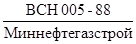 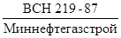 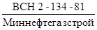 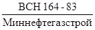 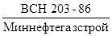
СОГЛАСОВАНЫ:
Госстрой СССР, письмо № АЧ-4129 В от 22.11.1988 г.
Главное управление проектирования и капитального строительства Миннефтепрома, письмо № 3-1-24/898 от 04.10.1988 г.
Главное управление проектирования и капитального строительства Мингазпрома, письмо № 05-2/1429 от 25.10.1988 г.
Главгосгазнадзор СССР, письмо № 11-5-2/319 от 25.11.1988 г.
Управление охраны труда и военизированных спецслужб Миннефтегазстроя. Начальник А.С. Пащенко.
|
Министерство строительства предприятий нефтяной и газовой промышленности |
Ведомственные строительные нормы |
|
|
Строительство промысловых стальных трубопроводов. |
Взамен
|
1. ОБЩИЕ ПОЛОЖЕНИЯ
1.1. Настоящие Ведомственные
строительные нормы (ВСН) распространяются на сооружение и реконструкцию
промысловых стальных трубопроводовХ диаметром до 1420 мм
(включительно) на новых и действующих месторождениях нефти, газа, газового
конденсата и подземных хранилищ газа (ПХГ) с избыточным давлением среды не выше
32 MПa (320 кгс/см2),
область распространения которых регламентирована «Нормами проектирования
промысловых стальных трубопроводов» 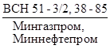
Х В дальнейшем (за исключением особо оговоренных случаев) вместо слов «промысловый (е) стальной трубопровод (ы)» будет употребляться слово «трубопровод (ы)».
1.2. Требования настоящих ВСН не распространяются на сооружение и реконструкцию промысловых трубопроводов в районах вечной мерзлоты, в зоне морских акваторий и районах с сейсмичностью выше 8 баллов для подземных и выше 6 баллов для надземных трубопроводов, на внутриплощадочные трубопроводы. В этих случаях должны соблюдаться требования соответствующих ведомственных строительных норм, а при отсутствии - специальные требования к производству и приемке работ, указанные в проектной документации.
|
Внесены Всесоюзным научно-исследовательским институтом по строительству магистральных трубопроводов |
Утверждены приказом Миннефтегазстроя |
Срок введения в действие |
Требования ВСН должны учитываться при разработке проектов организации строительства, рабочих чертежей и проектов производства работ.
1.3. При строительстве трубопроводов следует выполнять требования «Правил техники безопасности при строительстве магистральных стальных трубопроводов», утвержденных Миннефтегазстроем.
1.4. При выполнении взрывных работ следует руководствоваться «Едиными правилами безопасности при взрывных работах», утвержденными Госгортехнадзором СССР.
1.5. Ширину полосы отвода земель на время строительства трубопроводов нефти, газа и газового конденсата определяют проектом с учетом специфики их сооружения и норм отвода земель для магистральных трубопроводов (СН 452-73); для водоводов - по СН 456-72.
1.6. Минимальная температура воздуха, при которой разрешается производить строительно-монтажные работы с трубами из разных марок стали, должна соответствовать требованиям «Инструкции по применению стальных труб в газовой и нефтяной промышленности», утвержденной Мингазпромом, Миннефтегазстроем и Миннефтепромом.
1.7. Строительство промысловых трубопроводов должно производиться с применением методов поточной и индустриальной организации работ.
1.8. Строительство трубопроводов следует вести по принципу гибкой технологии и организации, для чего строительный поток должен быть оснащен комплектом технологических машин и оснастки применительно к разным диаметрам и назначениям трубопроводов.
1.9. При разработке проекта производства работ (ППР) для строительства трубопроводов на освоенных месторождениях в местах наличия густой сети подземных коммуникаций необходимо разработать специальные методы производства работ, обеспечивающие сохранность этих коммуникаций.
1.10. Проект организации строительства (ПОС), проект производства работ (ППР) и документация по организации работ строительной организации разрабатываются в соответствии со СНиП 3.01.01-85.
1.11. При выполнении строительно-монтажных работ на промысловых трубопроводах исполнительную документация необходимо оформлять в соответствии с действующими формами исполнительной производственной документации на скрытые работы при сооружении магистральных трубопроводов.
2. ОРГАНИЗАЦИЯ РАБОТ
2.1. Строительство промысловых трубопроводов следует организовывать в соответствии с требованиями СНиП 3.01.01-85 и требованиями настоящих ВСН.
2.2. Основой для планирования работы трубопроводостроительного потока служит проект организации работ (ПОР) на годовую производственную программу. На основе ПОР должны разрабатываться графики движения трубопроводостроительных потоков (календарный план).
Календарный план потока должен удовлетворять следующим условиям:
соответствие объемов и структур работ технологической производственной мощности потокаХ;
Х Под технологической производственной мощностью потока понимается максимальная протяженность трубопроводов по диаметрам и назначениям в километрах, которую может построить поток (с разбивкой по кварталам) в течение года при заданной технологии и организации работ.
минимизация межобъектных перебазировок;
равномерность загрузки потока по временным интервалам;
максимальная занятость (загрузка) потока на объектах, расположенных в районе базирования потока.
График движения потока разрабатывается на один - два года и отражает:
перечень всех объектов, строящихся потоком;
объемы работ и объекты зимнего и летнего сезонов строительства;
продолжительность строительства с учетом слияния сезона и перебазировок;
виды основных работ;
последовательность движения потока по объектам.
Оптимальные запасы материалъно-технологических ресурсов, необходимые для бесперебойной работы потока, следует определять с учетом следующих факторов:
отдаленности основной базы снабжения;
состояния дорожной сети;
сезона года;
транспортной схемы доставки материалов;
производительности потока.
2.3. Организационная структура потока должна быть гибкой, изменяемой. Изменение структуры должно происходить по заранее намеченному плану в соответствии с характеристикой сооружаемого трубопровода.
2.4. Промысловый трубопроводостроительный поток функционирует на определенной территории месторождений, ведя строительство одновременно нескольких трубопроводов поточным методом.
Места базирования потока определяет с учетом расположения наиболее ресурсоемких объектов, чтобы минимизировать затраты на перевозку рабочих до объекта.
2.5. Величина технологических заделов должна быть оптимальной для компенсации колебания выработок частных потоков, ее рассчитывают согласно рекомендуемому приложению 1.
2.6. Инженерно-технологические объекты (узел переключения кранов на водоводе поддержания пластового давления (ППД), узел переключения кранов на газлифтном трубопроводе, сложные переходы через подземные коммуникации) следует сооружать поточным методом силами специализированного звена.
2.7. Непрерывный график сооружения инженерно-технологических объектов составляют в соответствии со сводным календарным графиком строительства трубопроводов. В свою очередь график поставки арматуры и деталей должен быть увязан с непрерывным графиком сооружения инженерно-технологических объектов.
2.8. Специализированное звено своими силами выполняет все виды работ, включая испытание трубопроводов на прочность и герметичность. Инженерно-технологические объекты следует сооружать, как правило, индустриальными методами из блоков или блок-модулей.
2.9. Типы машин и оборудования, их количество и расстановка должны соответствовать параметрам трубопровода, условиям строительства, а также принятым способам работ.
2.10. На строительстве промысловых трубопроводов используют в основном две схемы организации выполнения сварочно-монтажных работ:
полевую (трассовую), по которой отдельные трубы доставляют непосредственно на трассу, раскладывают вдоль траншеи, стыкуют и сваривают в нитку;
базовую, по которой трубопроводы сваривают в двух-, трехтрубные секции на трубосварочной базе и вывозят на трассу для сварки в нитку.
Схему сварочно-монтажных работ следует выбирать на основе соответствующего технико-экономического обоснования.
2.11. При базовой схеме организации сварочно-монтажных работ наиболее экономичным методом сварки стальных труб является стыковая контактная сварка оплавлением.
2.12. В основу организации производства сварочно-монтажных работ в трассовых условиях положен поточный метод, который заключается в непрерывном и ритмичном выполнении отдельных технологических операций с учетом оптимального уровня их совмещения и расчленения в зависимости от конкретных условий строительства.
3. ПОДГОТОВИТЕЛЬНЫЕ РАБОТЫ
3.1. Подготовительные работы при строительстве промысловых трубопроводов следует выполнять в соответствии с требованиями разд. 2 (пп. 2.1 - 2.6) СНиП III-42-80, разд. 2 СНиП 3.01.01-85 и настоящих ВСН.
3.2. Расчистку трасс под многониточные трубопроводы при одновременном их строительстве на обводненных и заболоченных участках необходимо выполнять на полную проектную ширину коридора.
3.3. Рекультивацию земель в грунтах сельскохозяйственного назначения следует выполнять в соответствии с ГОСТ 17.5.3.04-83.
3.4. В ПОС и ППР на устройство временных вдольтрассовых проездов необходимо учитывать следующее.
Тип, конструкцию и ширину проезжей части временных проездов выбирают в зависимости от диаметров трубопроводов, количества одновременно укладываемых ниток, способов прокладки трубопроводов и, с учетом сезонности производства строительно-монтажных работ, несущей способности и естественного основания, наличия местных дорожно-строительных материалов.
На сложных участках (болотах, переувлажненных и обводненных участках трассы) могут быть использованы следующие конструкции технологических проездов:
со сборно-разборным покрытием;
лежневые;
дерево-грунтовые;
насыпные, армированные мелколесьем;
насыпные с применением нетканых синтетических материалов (НСМ);
грунтовые без покрытия;
снежно-ледовые.
4. ЗЕМЛЯНЫЕ РАБОТЫ
4.1. Земляные работы при строительстве промысловых трубопроводов следует выполнять в соответствии с требованиями разд. 3 (пп. 3.1 - 3.4, 3.9 - 3.15) СНиП III-42-80 и требованиями настоящих ВСН.
4.2. Размеры и профили траншеи при
строительстве трубопроводов устанавливаются проектом в соответствии со СНиП
2.05.06-85, пп. 5.1 - 5.4 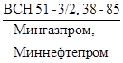
4.3. На криволинейных участках с резко пересеченной или выраженной холмистой местностью при работе в грунтах с каменистыми включениями и в предварительно разрыхленных скальных, на участках повышенной влажности, торфяных и обводненных грунтах траншеи следует разрабатывать одноковшовыми экскаваторами.
Для разработки траншей с откосами более 1:0,5, а также на неустойчивых грунтах следует использовать одноковшовые экскаваторы, в том числе драглайны.
4.4. Разработку траншеи в сезонномерзлых грунтах следует выполнять поточно-расчлененным методом с использованием комплекта машин в соответствии с рекомендуемым приложением 2.
4.5. Приямки под технологические захлесты и трубную арматуру разрабатывают одновременно с рытьем траншеи, если позволяет устойчивость грунтов.
4.6. Разработку траншей одноковшовым экскаватором следует вести с устранением гребешков на дне в процессе копания, что достигается протаскиванием ковша по дну траншей после завершения разработки забоя.
4.7. На участках с высоким уровнем грунтовых вод разработку траншей следует начинать с более низких мест для обеспечения стока воды и осушения вышележащих участков.
При разработке траншей одноковшовыми экскаваторами с обратной лопатой и драглайном допускается перебор грунта до 10 см, недобор грунта не допускается.
4.8. Для районов с глубиной промерзания 0,4 м и более в ППР должны предусматриваться мероприятия по предохранению грунта от промерзания (рыхление поверхностного слоя, снежный валик, утепление древесными остатками и др.). Для сокращения продолжительности оттаивания мерзлого грунта в теплое время необходимо к периоду установления положительных температур удалить с полосы будущей траншеи снег, моховой покров, порубочные остатки.
4.9. Технологический задел по рытью траншеи в устойчивых грунтах при отсутствии снегопада и льдообразования рассчитывают согласно п. 2.5.
В неустойчивых грунтах при снегопадах, при льдообразовании, в районах пустынь во избежание выдувания и заноса траншей песком технологический задел не должен превышать сменную производительность укладочного потока.
Если в траншее образовался лед, перед укладкой трубопровода его необходимо удалить экскаватором.
4.10. Если по грунтовым условиям работа техники затруднена в зоне размещения отвала грунта, засыпку необходимо вести одноковшовым экскаватором или скребковым траншеезасыпателем, установленным со стороны рабочей полосы.
4.11. На заболоченных участках допускается присыпка и засыпка трубопровода грунтом из резерва («ложная траншея»); расстояние от оси трубопровода «ложной траншеи» предусматривается проектом.
4.12. В зимнее время, когда слабые грунты проморожены недостаточно для прохода землеройных машин, траншею разрабатывают по технологии летнего строительства.
4.13. При строительстве трубопроводов методом сплава, протаскивания или прямой укладки с насыпи через озера, на берегах которых имеются слабые грунты, следует предусматривать отсыпку монтажных площадок минеральным грунтом в соответствии с проектом.
При разработке траншеи в летнее время следует использовать понтоны и скреперные установки; в зимнее время при промерзании воды до дна озера укладку трубопровода производят со льда. При непромерзании воды до дна устраивают майну и траншею разрабатывают экскаватором с понтона. Майну устраивают путем нарезки льда баровыми машинами. Лед удаляют грузоподъемными машинами. Эти решения должны отражаться в проекте.
4.14. При пересечении траншей с действующими подземными коммуникациями разработка грунта должна производиться в соответствии со СНиП 3.02.01-87 и требованиями безопасности, предъявленными владельцем пересекаемых коммуникаций.
4.15. До начала работы по устройству траншеи в скальных грунтах с ее полосы снимают вскрышной слой рыхлого грунта на всю глубину до обнажения скального грунта при толщине вскрышного слоя более 0,5 м. При меньшей толщине вскрышного слоя его можно не удалять.
Снятый грунт вскрыши укладывают на берме траншеи и используют при необходимости для подсыпки и присыпки трубопровода.
4.16. Разрабатывают траншеи в скальных грунтах после предварительного рыхления скального грунта механическим или буровзрывным способом и грубой его планировки в соответствии с проектом. Механическое рыхление скального грунта осуществляют при его небольшой мощности или сильной трещиноватости и выполняют тракторными рыхлителями.
Рыхление скального грунта буровзрывным способом производится преимущественно способами короткозамедленного взрывания, при котором зарядные шпуры (скважины) располагаются по квадратной сетке.
В исключительных случаях применение мгновенного способа взрывания шпура скважины располагаются в шахматной порядке.
4.17. Бурение шпуров и скважин осуществляется буровыми, как правило, подвижными установками, при этом глубина шпура должна превышать глубину траншеи на 10 - 15 см.
4.18. Характеристики используемых зарядов для рыхления грунта и их типы определяются паспортом буро-взрывных работ, являющимся неотъемлемым элементом ППР, который разрабатывается с учетом геотехнических характеристик скального грунта, параметров траншеи и типа используемого ВВ.
Окончательное определение массы заряда и уточнение сетки расположения шпуров производят пробными взрывами.
4.19. Взрывные работы следует выполнять таким образом, чтобы рыхление грунта производилось до проектных отметок дна траншея и без дополнительной доработки его взрывом. Степень рыхления скального грунта при взрывах должна обеспечивать выход кусков размерами, не превышающими 2/3 размера ковша экскаватора, используемого при разработке траншей. При наличии кусков большого размера их разрушают накладными зарядами.
4.20. Для предохранения изоляции укладываемого в траншею трубопровода на дне траншеи устраивают постель из мягкого привозного или вскрышного грунта толщиной не менее 10 см над выступающими частями дна траншеи. Постель устраивают преимущественно с помощью роторных или одноковшовых экскаваторов или роторных траншеезасыпателей. Для предохранения изоляции трубопровода от падения больших кусков породы устраивают присыпку трубопровода мягким привозным или вскрышным грунтом высотой 20 см от верхней образующей трубы.
При отсутствии мягкого грунта подсыпку и присыпку можно заменять устройством сплошной футеровки из деревянных реек или соломенных, камышовых, пенопластовых и других матов.
4.21. При проведении взрывных работ сваренный по трассе трубопровод необходимо защитить специальными щитами от разлетающихся кусков грунта.
4.22. Перед засыпкой трубопровода, уложенного в траншею, должны быть выполнены:
проверка правильного положения трубопровода и плотного его прилегания к дну траншеи;
проверка качества изоляционного покрытия и при необходимости его исправление;
проведение работ по предохранению изоляционного покрытия от механических повреждений при засыпке (предусмотренных проектом);
получение письменного разрешения от заказчика на засыпку уложенного трубопровода;
выдача машинисту землеройной техники наряд-заказа на производство работ по засыпке.
4.23. Засыпку трубопровода осуществляют преимущественно бульдозерами и траншеезасыпателямя роторного типа. На сложных участках в ряде случаев засыпку выполняют одноковшовыми экскаваторами, оборудованными ковшом с обратной лопатой или драглайном.
4.24. При наличии горизонтальных кривых вначале засыпают криволинейный участок трубопровода, а затем остальную часть. При этом засыпку начинают с середины криволинейного участка, двигаясь к его концам. На участках трассы с вертикальными кривыми трубопровода засыпку его осуществляют сверху вниз.
4.25. После засыпки трубопровода, проложенного на нерекультивируемых землях, над трубопроводом устраивают валик, высота которого должна совпадать с ожидаемой величиной осадки грунта засыпки. После засыпки трубопровода минеральным грунтом на рекультивируемых землях в летнее время его уплотняют многократными проходами гусеничных тракторов или пневмокатков. Уплотнение грунта должно осуществляться до заполнения трубопровода транспортируемым продуктом. По уплотненному грунту укладывают, затем разравнивают ранее снятый плодородный слой.
4.26. Засыпку трубопровода, уложенного в траншею, выполненную в мерзлых грунтах, осуществляют как в обычных условиях, если после укладки трубопровода непосредственно сразу после разработки траншеи и устройства подсыпки (при необходимости) грунт отвала не подвергся смерзанию. В случае смерзания грунта отвала, во избежание повреждения изоляционного покрытия трубопровода, его необходимо присыпать талым грунтом или мелкоразрыхленным мерзлым грунтом на высоту не менее 20 см от верха трубы. Дальнейшую засыпку трубопровода выполняют грунтом отвала с помощью бульдозера или роторного траншеезасыпателя, который способен разрабатывать отвал с промерзанием на глубину до 0,5 м. При более глубоком промерзании отвала грунта необходимо его предварительно разрыхлить механическим или буровзрывным способом. При засыпке мерзлым грунтом над трубопроводом делают грунтовый валик с учетом его осадки после оттаивания.
4.27. Методы засыпки трубопровода, уложенного в траншею, разработанную в болотистых грунтах, выполняемой в летнее время года, зависят от типа и структуры болота. На болотах с несущей способностью более 0,01 МПа засыпку трубопровода производят бульдозерами на болотном ходу, или экскаватором-драглайном на уширенных гусеницах, или одноковшовыми экскаваторами с обратной лопатой или драглайном на уширенных гусеницах, работающих с перекидных сланей.
4.28. Засыпку разработанных траншей на болотах, промерзших в зимнее время и имеющих достаточную несущую способность, осуществляют так же, как при засыпке траншей в обычных мерзлых грунтах. При недостаточном промерзании болота и малой несущей способности для засыпки траншей используют бульдозеры или одноковшовые экскаваторы на уширенных гусеницах, пеносанях или щитах.
5. СВАРКА И КОНТРОЛЬ КАЧЕСТВА СВАРНЫХ СОЕДИНЕНИЙ ТРУБОПРОВОДОВ
Общие положения
5.1. Сварку и контроль качества
сварных соединений промысловых трубопроводов следует выполнять в соответствии с
требованиями раздела 4 (пп. 4.1, 4.2, 4.6, 4.7, 4.9, 4.10, 4.12 - 4.25, 4.30,
4.31, 4.34, 4.35, 4.37, 4.41 - 4.51) СНиП III-42-80, 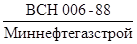 «Строительство магистральных и промысловых
трубопроводов. Контроль качества и приемка работ» и требованиями настоящих ВСН.
«Строительство магистральных и промысловых
трубопроводов. Контроль качества и приемка работ» и требованиями настоящих ВСН.
5.2. При строительстве трубопроводов применяют следующие виды сварки: ручную дуговую, автоматическую дуговую под слоем флюса, ручную и механизированную аргонодуговую, механизированную дуговую в углекислом газе, порошковую проволоку с принудительным формированием сварного шва, стыковую контактную сварку, а также пайку.
На каждый вид сварки должны разрабатываться технологические карты.
5.3. Типы электродов для ручной дуговой сварки следует выбирать в соответствии со СНиП 2.05.06-85, марки электродов должны соответствовать справочным приложениям 3, 4 и 5 настоящего документа.
5.4. При сборке стыков труб с одинаковой нормативной толщиной стенки должны соблюдаться следующие требования:
смещение внутренних кромок бесшовных труб не должно превышать 2 мм. Допускаются на длине не более 100 мм местные внутренние смещения кромок труб, не превышающие 3 мм; величина наружного смещения в этом случае не нормируется, однако должен быть обеспечен плавный переход поверхности шва к основному металлу в соответствии с технологической картой. Оценку величины смещения внутренних кромок следует проводить непосредственным измерением с использованием шаблонов марки УПС-4;
смещение кромок электросварных труб не должно превышать 20 % нормативной толщины стенки (не более 3 мм). Величину смещения кромок допускается измерять по наружным поверхностям труб сварочным шаблоном.
Для труб с нормативной толщиной стенки до 10 мм допускается смещение кромок до 40 % нормативной толщины стенки, но не более 2 мм.
При необходимости следует делать селекцию или калибровку труб.
Зазор в стыках труб в зависимости от вида покрытия и диаметра применяемых электродов должен соответствовать данным, приведенным в справочном приложении 6.
5.5. При проведении калибровки торцы труб не должны быть выведены за пределы плюсовых допусков по наружному диаметру. Допускается калибровка бесшовных труб диаметром до 426 мм с нормативным значением предела текучести до 32 кгс/мм2. Перед калибровкой труб деформируемый участок должен быть нагрет до температуры 250 °С.
5.6. Основные типы разделки кромок труб, выполняемых в монтажных условиях, приведены на рис. 1.
Рис. 1. Формы подготовленных кромок:
а - со скосом кромок; б - с криволинейным скосом кромок;
В = 7 мм при толщине стенки 15-20 мм; В = 10 мм при толщине стенки больше 20 мм
Подготовку кромок (см. рис. 1, а) можно выполнять как механической обработкой, так и газовой резкой с последующей зачисткой шлифмашинкой. Подготовку кромок (см. рис. 1, б) можно выполнять только механической обработкой концов труб или патрубков. Такая разделка является предпочтительной при изготовлении трубных узлов и труб при толщине стенки более 15 мм.
5.7. Сборку труб диаметром 525 мм и более необходимо выполнять, как правило, на внутренних центраторах. Сборку захлестов, а также других стыков, где применение внутренних центраторов технологически невозможно, следует производить с помощью наружных центраторов.
5.8. Сварка труб с деталями трубопроводов, запорной и распределительной арматурой может производиться встык непосредственно или через патрубок с промежуточной толщиной стенки. При соединении труб и деталей с различными нормативными характеристиками механических свойств сварочные материалы следует выбирать применительно к стали с максимальной прочностью.
5.9. Возможные варианты соединений разнотолщинных элементов показаны на рис. 2.
При совпадении наружных диаметров труб и деталей (рис. 2, а) допускается двукратное соотношение толщин стенок. Непосредственное соединение разнотолщинных элементов (см. рис. 2, поз. б и в) допускается при условии не более полуторократного соотношения толщин стенок элементов в зоне сварки.
В зоне сварки корневого слоя два смещение кромок d (см. рис. 2), образованных внутренней поверхностью трубы относительно детали, не должно превышать 2 мм. Допускается местное смещение кромок до 5 мм на длине не более 100 мм. При сварке облицовочного слоя шва должен быть обеспечен плавный переход от поверхности трубы к поверхности детали или к обработанной поверхности арматуры трубопровода.
В монтажных условиях допускается производить подрезку кромки детали трубопроводов газовым резаком с последующей за чисткой шлифмашинкой (см. рис. 2, поз. а). При обработке кромок деталей трубопроводов в монтажных условиях должно быть обеспечено кольцевое притупление 2 ±1 мм.
Сварку неповоротных стыков трубопроводов малых средних диаметров (до 1000 мм) следует вести методом последовательного наращивания. Сварку стыков труб большого диаметра (1020 - 1420 мм), как правило, выполняют поточно-расчлененным методом.
Рис. 2. Варианты сборки стыков разнотолщинных элементов:
а - совпадение наружных диаметров трубы и детали; б - совпадение внутренних диаметров; в - сборка разнотолщинных элементов при несовпадении диаметров; S - номинальная толщина стенки детали; Sтр - нормативная толщина стенки трубы; d - смещение кромок при сборке стыка; Dтр - наружный нормативный диаметр трубы; Dсб - сборочный диаметр Dсб=(Dтр-2Sтр) ± 1 мм.
5.10. При сварке на трассе неповоротных стыков труб малых диаметров (до 325 мм) допускается перемещать плеть (протягивать) по мере наращивания. Протягивание осуществляют путем укладки плетей на скользящие или катковые опоры или непосредственно на снег, лед, мягкий грунт. Протягивание следует осуществлять после остывания стыков ниже 500 °С. После протягивания плетей необходимо выполнить контроль стыков неразрушающими методами.
5.11. До начала развозки трубных секций по трассе трубопровода необходимо иметь комплект раскладочных опор, количество которых должно обеспечивать заданный фронт работ для сварочно-монтажной бригады, а также комплект лежек для инвентарных монтажных опор или передвижных опорно-центровочных устройств.
5.12. В обоснованных ППР случаях сваренные на бровке траншеи плети, во избежание самопроизвольного сброса трубопровода в траншею, следует якорить.
Анкерные монтажные опоры устанавливают через 150 - 250 м, на участках с плавным поворотом трассы через 72 м, на сильно пересеченных участках при наличии большого числа кривых - через 36 м или на расстоянии, равном длине секции труб.
5.13. При раскладке и сварке изолированных секций (труб) в плети на трассе следует использовать мягкие подкладки.
5.14. При подогреве кромок изолированных труб (трубопровода) перед сваркой следует применять, как правило, безогневые способы. При огневом способе применяются, внутренние подогреватели, при применении наружных подогревателей следует использовать защитные устройства или горелки с направленным действием пламени.
5.15. При сварке стыков изолированных труб (трубопровода) для предохранения изоляции от брызг расплавленного металла необходимо применять защитные коврики из несгораемого материала, размещаемые по обе стороны свариваемого стыка.
5.16. При сварке изолированных труб в секции на трубосварочных базах все контактные поверхности должны быть облицованы амортизирующими материалами с целью исключения повреждений покрытия труб.
5.17. Поворотная сварка обетонированных труб в секции производится на стендах, оборудованных преимущественно торцевыми вращателями и обрезиненными грузонесущими элементами (роликовыми опорами, покатями, отсекателями). При перекатывании по покатям труб или секций соударения их между собой не допускаются.
5.18. На трубосварочных базах опорные элементы размещают с таким расчетом, чтобы исключить появление недопустимых напряжений в свариваемом стыке.
5.19. Криволинейные участки трубопроводов, как естественного изгиба, так и искусственного гнутья, необходимо монтировать в строгом соответствии с проектом и с применением технологии, исключающей повреждение заводского изоляционного покрытия.
5.20. На участке трассы, где проектом предусмотрены кривые холодного гнутья, работы следует выполнять по одному из трех вариантов:
получаемые по централизованных поставкам (с завода-изготовителя) изолированные кривые вставки доставляют к месту монтажа и вваривают в нитку с последующей изоляцией монтажных стыков;
из труб, не имеющих заводской изоляции, изготовляют по типовой технологии кривые холодного гнутья в базовых или трассовых условиях, затем их вваривают в нитку и изолируют с помощью переносных портативных устройств;
из изолированных полиэтиленом на заводе труб изготовляют в базовых условиях кривые холодного гнутья, которые затем на месте монтажа вваривают в нитку, после этого изолируют монтажные стыки.
Выбор варианта должен быть обоснован конкретными условиями строительства.
5.21. В целях обеспечения безопасности труда электросварочные работы необходимо выполнять в соответствии с требованиями ГОСТ 12.3.003-86.
Контроль качества стыков
5.22. Объемы контроля стыков промысловых трубопроводов
неразрушающими методами следует принимать в соответствии с табл. 1 настоящих ВСН и  «Строительство
магистральных и промысловых трубопроводов. Контроль качества и приемка работ».
«Строительство
магистральных и промысловых трубопроводов. Контроль качества и приемка работ».
Перед проведением неразрушающего контроля качества сварных соединений внешнему осмотру подвергаются все стыки, для чего они должны быть очищены от шлака, грязи, брызг расплавленного металла.
Объемы контроля сварных соединений промысловых трубопроводов
|
Назначение трубопроводов |
Класс трубопроводов |
P, МПа |
Ду, мм |
Категории участков и трубопроводов |
Количество сварных соединений, подлежащих контролю физическими методами, % |
||||
|
Всего |
Радиографический, не менее |
Ультразвуковой |
Магнитографический |
||||||
|
1 |
2 |
3 |
4 |
5 |
6 |
7 |
8 |
9 |
10 |
|
1 |
Газопроводы, газопроводы шлейфы, коллекторы неочищенного газа, межпромысловые коллекторы, газопроводы ПХГ, трубопроводы нефтяного попутного газа, газопроводы газлифтных систем и подачи газа в продуктивные пласты, трубопроводы нестабильного конденсата |
I |
10 < P £ 32 |
В, I, II |
100 |
100 |
- |
- |
|
|
II |
4 < P £ 10 |
В, I |
100 |
100 |
- |
- |
|||
|
II, III |
100 |
25 |
Остальное |
||||||
|
III |
2,5 < P £ 4 |
В, I |
100 |
100 |
- |
- |
|||
|
II, III |
100 |
25 |
Остальное |
||||||
|
IV |
1,2 < P £ 2,5 |
B |
100 |
100 |
- |
- |
|||
|
V |
P £ 1,2 |
I |
100 |
25 |
Остальное |
||||
|
II |
25 |
10 |
То же |
||||||
|
III,IV |
10 |
5 |
" |
||||||
|
2 |
Нефтепроводы, выкидные трубопроводы, нефтепродуктопроводы, нефтегазосборные трубопроводы, трубопроводы стабильного конденсата |
I |
Ду ³ 700 |
B, I |
100 |
100 |
- |
- |
|
|
II |
100 |
25 |
Остальное |
||||||
|
II |
300 £ Ду < 700 |
B |
100 |
50 |
То же |
||||
|
I |
100 |
25 |
" |
||||||
|
II |
25 |
10 |
" |
||||||
|
III, IV |
10 |
5 |
" |
||||||
|
III |
Ду < 300 |
B |
100 |
25 |
Остальное |
||||
|
I |
25 |
10 |
" |
||||||
|
II |
10 |
5 |
" |
||||||
|
III,IV |
5 |
2 |
" |
||||||
|
3 |
Трубопроводы заводнения нефтяных пластов, захоронения пластовых и сточных вод |
Р ³ 10 |
I |
100 |
50 |
" |
|||
|
II, III |
100 |
25 |
" |
||||||
|
4 |
Трубопроводы пресной воды |
Р ³ 10 |
I |
25 |
10 |
" |
|||
|
II |
10 |
5 |
" |
||||||
|
III,IV |
5 |
2 |
" |
||||||
|
5 |
Метанолопроводы, трубопроводы, транспортирующие вредные среды |
B |
100 |
50 |
Остальное |
- |
|||
|
I |
100 |
25 |
" |
- |
|||||
|
6 |
Ингибиторопроводы, за исключением трубопроводов 3-й группы |
B |
100 |
25 |
" |
- |
|||
|
I |
25 |
10 |
" |
- |
|||||
|
II |
10 |
5 |
" |
- |
|||||
|
7 |
Угловые сварные соединения всех трубопроводов |
100 |
- |
100 |
- |
||||
Примечания:
1. Классы и категории трубопроводов и их участков
приведены в соответствие с 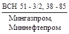
2. На трубосварочных базах с большой номенклатурой типоразмеров труб, свариваемых для различных классов и категорий трубопроводов и их участков, должно быть предусмотрено увеличение объемов радиографического контроля поворотных сварных соединении до 100 %, при этом требования настоящей таблицы распространяются на сварные соединения, выполненные неповоротной сваркой.
3. При строительстве промысловых трубопроводов в условиях сильно заболоченной местности (переходы через болота II и III типов) проектом должно быть предусмотрено увеличение объемов контроля сварных соединений трубопроводов по пп.1-4 настоящей таблицы до 100 %. В том числе радиографический методом на участках категорий В и I - не менее 50 %, II - не менее 25 %, III и IV - не менее 10 % (но не менее значений, установленных настоящей таблицей).
4. Сварные соединения участков трубопроводов на переходах через железные и автомобильные дороги I, II и III категорий должны быть проконтролированы в объеме 100 % радиографическим методом.
5. Для трубопроводов по № п/п 3 и 4 настоящей таблицы при давлениях менее 10 МПа объемы контроля снижаются вдвое.
6. При невозможности контроля угловых сварных соединений ультразвуком он может быть заменен контролем методами радиографии по ОСТ 102-51-85 и ГОСТ 7512-82.
5.23. Радиографический контроль качества сварных соединений трубопроводов должен осуществляться в соответствии с требованиями ГОСТ 7512-82.
Ультразвуковой контроль должен проводиться в соответствии с требованиями ГОСТ 14782-86, магнитографический - ГОСТ 25225-82.
5.24. Проконтролированные неразрушающими методами сварные
соединения считаются годными, если в них отсутствуют дефекты, величина,
количество и плотность распределения которых превышает значения, рекомендуемые
требованиями 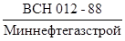
Сварка трубопроводов для транспортировки нефти, газа и газового конденсата, содержащих сероводород
5.25. Настоящие требования распространяются на производство сварочно-монтажных работ и контроль стыков промысловых трубопроводов с давлением сероводорода от 0,3 до 1 МПа.
Для строительства трубопроводов, транспортирующих среды с более высоким содержанием сероводорода или существенно отличающиеся коррозионной агрессивностью (по определению проектной организации), необходимо разрабатывать специальные инструкции по сварке, термической обработке и контролю качества стыков.
5.26. Для трубопроводов применяют следующие виды сварки: ручную, дуговую, автоматическую под флюсом, аргонодуговую, стыковую, электроконтактную.
5.27. Для ручной дуговой сварки корня шва и горячего прохода следует применять электроды с целлюлозным покрытием марок Фокс Цель, ВСЦ-4 и Кобе 6010 диаметром 2,5 - 4,0 мм, а также электроды с покрытием основного вида марок Фокс ЕВ-50, ЛБ-52У, УОНИ-13/45 и УОНИ-13/55 диаметром 2,5 - 3,25 мм. Указанные электроды с основным покрытием диаметром 3 - 4 мм рекомендуются также для подварки корня шва изнутри трубы до сварки заполняющих слоев шва. Для сварки заполняющих слоев шва используют электроды для труб с прочностью до 55 кгс/мм2 включительно УОНИ-13/45, УОНИ-13/55, Фоке ЕВ-50, ОЭС/ВНИИСТ-26.
Для автоматической сварки следует применять флюс АН-348А и проволоку диаметром 2 мм (для трубопроводов диаметром до 400 мм) и 3 мм (для трубопроводов выше 400 мм) марок СВ08АА и СВ08А.
Разрешается применять другие сварочные материалы при условии положительных результатов испытаний на стойкость против сероводородного коррозионного растрескивания по методике МСКР-01-85, утвержденной Межведомственным НТС по защите металлов от коррозии ГКНТ СССР 1985 г.
5.28. Сварку под флюсом на трубосварочных базах можно выполнять как по ручной подварке, так и двустороннюю. При двусторонней сварке стыков, не подвергаемых термической обработке, внутренний шов необходимо выполнять до заполнения всей разделки кромок.
При односторонней сварке стыков труб с толщинами стенок более 17 мм допускается выполнение 1 - 2 дополнительных заполняющих слоев электродами с основным видом покрытия с целью улучшения отделяемости шлаковой корки. Сварку под флюсом облицовочного слоя толстостенных труб можно выполнять двумя параллельными валиками.
Запрещается до остывания шва скатывать секции на мокрый грунт или снег. При температуре окружающего воздуха ниже минус 20 °С охлаждать стык после сварки следует в теплоизоляции в соответствии с технологической картой.
5.29. Термическую обработку сварных соединений подземных участков трубопроводов (кроме стыков приварки кранов) можно не производить при условии, что твердость различных зон сварного соединения не превышает 220 единиц по шкале Виккерса, а толщина стенки труб не более 16 мм. При этом транспортируемый продукт должен ингибироваться.
5.30. К сварке стыков промысловых трубопроводов допускаются сварщики, имеющие удостоверение на право производить сварку трубопроводов, транспортирующих нефтегазовые среды, содержащие сероводород. Указанное удостоверение выдается сварщику, прошедшему подготовку и проверку знаний в соответствии с «Правилами аттестации сварщика», утвержденными Госгортехнадзором 22.04.71 г., или «Положением об аттестации электросварщиков», утвержденным Миннефтегазстроем, а также знания настоящего раздела. Сварщики инофирм, привлеченные для строительства объектов на территории СССР, могут аттестовываться в соответствии с требованиями международных стандартов API, AWS или DIN. Непосредственно перед началом работ они должны проходить инструктаж, разъясняющий основные положения настоящего документа, и сваривать допускные стыки с последующим радиографическим контролем их качества.
5.31. Соединительные детали в сероводородостойком исполнении должен поставлять заказчик. Допускается изготовление отдельных типов соединительных деталей (по согласованию с заказчиком) на промбазах строительно-монтажных подразделений, в соответствии с действующими стандартами и техническими условиями.
Запрещается сварка стыков труб и деталей трубопроводов из разнородных (аустенитных и феррито-перлитных) сталей.
5.32. Контроль качества сварных соединений трубопроводов, транспортирующих нефтегазовые сероводородсодержащие среды, состоит из: систематического операционного контроля в процессе сборки и сварки стыков; внешнего осмотра и измерения геометрических параметров швов, проверки качества шва физическими методами контроля; механических испытаний (до начала сварочных работ) и контроля твердости металла шва и зоны термического влияния.
Перечисленные виды контроля
следует проводить в соответствии с 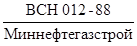
Стыки трубопроводов, перечисленных в пп. 1 и 2 табл. 1 на участках категории В и 1, а также стыки захлестов и приварки арматуры подвергаются 100-процентному радиографическому контролю. Стыки на остальных участках трубопроводов подвергаются 100-процентному контролю физическими методами, в том числе радиографическим методом в соответствии с графой 8 табл. 1. При проведении послесварочной термической обработки выполняется дублирующий контроль стыков в объеме 20 % ультразвуковым или магнитографическими методами.
Физические методы контроля и
оценка качества сварных соединений должны выполняться в соответствии с  .
.
Контроль твердости сварных соединений выполняют в объеме 10 % стыков методом «Польди» или аналогичным. Замеры проводят в трех точках: на металле шва, в зоне термического влияния (2 мм от линии сплавления) и на основном металле (50 мм от шва).
Величина твердости не должна превышать 220 единиц по шкале Бриннеля. Результаты контроля твердости записывают в журнал термической обработки стыков или оформляют актом и прилагают к сварочному журналу.
5.33. Стыки с выявленными при контроле дефектами могут быть исправлены, если их суммарная длина не превышает 1/6 периметра.
Стыки с трещинами ремонту не подлежат и должны быть вырезаны.
Ремонт стыков сваркой изнутри трубы не допускается. Дефектное место шва удаляют абразивным инструментом. Допускается его удаление газовым резаком с последующей обработкой поверхностей реза до металлического блеска шлифмашинкой.
Заваривать ремонтные участки шва необходимо электродами с основным покрытием диаметром 2,5 - 3,25 мм, указанным в п. 5.27 настоящих ВСН. Предварительный подогрев следует довести до 150 °С при любой температуре воздуха.
Контроль отремонтированных участков стыков должен производиться радиографическим методом и удовлетворять требованиям настоящего документа. Результаты контроля качества отремонтированных стыков с соответствующим заключением необходимо записывать в исполнительную документацию.
6. ТРАНСПОРТНЫЕ И ПОГРУЗОЧНО-РАЗГРУЗОЧНЫЕ РАБОТЫ
6.1. Транспортные и погрузочно-разгрузочные работы следует выполнять в соответствии с требованиями разд. 5 СНиП III-42-80, требованиями настоящих ВСН, ГОСТов, правил дорожного движения.
6.2. Типы транспортных средств выбирают в зависимости от условий перевозок в соответствии с проектом производства работ.
6.3. Приемка труб грузополучателем производится согласно ГОСТам, техническим условиям и «Инструкции о порядке приемки продукции производственно-технического назначения и товаров народного потребления по количеству и качеству», утвержденной Госарбитражем при Совете министров СССР.
6.4. Технология погрузочно-разгрузочных и транспортных работ включает:
выгрузку труб на железнодорожных станциях или пристанях;
транспортировку труб на железнодорожных станциях или пристани;
транспортировку труб на трубосварочную базу (ТСБ);
складирование труб на прирельсовом складе или на площадках ТСБ, а также складирование секций труб;
транспортировку секций труб на трассу к месту монтажа или «в карманы»;
погрузочно-разгрузочные работы на прирельсовом складе (пристани), трубозаготовительной базе и на трассе.
6.5. Трубы из железнодорожных полувагонов разгружают кранами на колесном или гусеничном ходу, на пристанях - плавкранами или трубоукладчиками, на трубосварочных базах - автокранами или трубоукладчиками. На трассе разгрузку ведут трубоукладчиками.
6.6. При проведении подъемно-транспортных операций следует применять нижеперечисленные типы грузозахватных средств:
при выгрузке труб из полувагонов - многостропные торцевые захваты;
при подъеме труб без изоляции - кольцевые стропы;
для перемещения секций труб на базовых площадках и на трассе - клещевые захваты;
для подъема труб и секций с наружной изоляцией - мягкие полотенца.
6.7. При применении изолированных труб необходимо тщательно разработать транспортную схему с целью минимизации перевалочных пунктов и сроков открытого хранения труб.
6.8. Транспортные средства должны быть оборудованы навесными устройствами, обеспечивающими сохранность труб (секций), их покрытие (изоляционное, теплоизоляционное и др.).
Трубы и секции малых диаметров (до 325 мм) для сокращения времени погрузки-выгрузки, обеспечения лучшей сохранности и повышения безопасности перевозок рекомендуется перевозить в пакетах.
6.9. Трубы (секции) с теплоизоляцией должны перевозить на транспортных средствах со специальным оборудованием, позволяющим избежать повреждения теплоизоляции.
6.10. При выполнении погрузочно-разгрузочных работ с обетонированными трубами следует применять торцевые захваты специальной конструкции, снижающие давление на кромки труб, коники трубовозов необходимо оборудовать мягкими подкладками во избежание повреждения покрытия о его острые металлические выступы.
Запрещается использование незащищенных стальных канатов в качестве такелажных средств.
6.11. Штабелирование обетонированных труб диаметром до 720 мм производят в 4 яруса, а свыше 720 мм - в 3 яруса.
6.12. Число труб и трубных секций, перевозимых на плетевозах с учетом грузоподъемности машин и размеров труб, определяют по рекомендуемым приложениям 7 и 8.
7. ОСНОВНЫЕ ПОЛОЖЕНИЯ ПО ЗАЩИТЕ ТРУБОПРОВОДОВ ОТ КОРРОЗИИ ИЗОЛЯЦИОННЫМИ ПОКРЫТИЯМИ И ТЕПЛОВАЯ ИЗОЛЯЦИЯ ТРУБОПРОВОДОВ
7.1. Типы и конструкции изоляционных и теплоизоляционных
покрытий, а также применяемые для защиты от коррозии материалы и материалы для
теплоизоляции трубопроводов определяются проектом в соответствии с ГОСТ
25812-83, СНиП 2.05.06-85 и 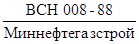
7.2. Работы по нанесению изоляционных и теплоизоляционных
покрытий следует выполнять в соответствии с требованиями разд. 6 СНиП
III-42-80, 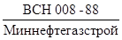
7.3. Для строительства трубопроводов следует применять преимущественно трубы с изоляционным и теплоизоляционным покрытиями, нанесенными в заводских и базовых условиях, и предусматривать соответствующие мероприятия по сохранности изоляции и теплоизоляции от механических повреждений при складировании, погрузочно-разгрузочных операциях, транспортировке и укладке трубопроводов.
7.4. Тип и конструкция изоляционного покрытия в местах сварных соединений труб должны быть аналогичны основным покрытиям.
7.5. Сварные стыки труб с битумными покрытиями допускается изолировать полимерными лентами с выполнением требований ГОСТ 25812-83. Для обеспечения прочной связи покрытия с имеющейся на трубе битумной изоляцией примыкающие к сварному шву края изоляции на 10 - 15 см очищают от обертки и срезают на конус. На подготовленную поверхность покрытия и изолируемую зону сварного шва наносят кистью или распылением грунтовку сплошным ровным слоем без сгустков, подтеков и пузырей. Покрытие из лент наносят на стык сразу же после высыхания грунтовки «до отлипа» механическим способом с применением специального устройства или вручную натяжением 10 Н/см ширины ленты. Конец ленты длиной около 20 см наносят без натяжения.
7.6. При применении битумных мастик для изоляции сварных стыков труб с битумным покрытием производят подготовительные работы по очистке зоны сварного шва и примыкающих краев имеющейся изоляции и нанесению на эти места грунтовки. После высыхания грунтовки наносят битумную мастику, обливая ею в два-три слоя изолируемый участок и растирая ее в нижней части трубопровода полотенцем, затем обертывают стеклохолстом, опять обливают слоем мастики, после чего наносят защитную обертку.
7.7. Контроль качества изоляционных и теплоизоляционных
покрытий производят в соответствии со СНиП III-42-80 и 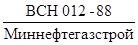
7.8. Конструкция тепловой изоляции назначается проектом и включает антикоррозионное, теплоизоляционное и гидроизоляционное покрытие.
7.9. Теплоизоляцию в трассовых условиях наносят только при отсутствии в близлежащих районах строительства баз или цехов по теплоизоляции труб.
7.10. Теплогидроизолированные трубы, трубные секции, узлы и детали следует производить в соответствия с технологическим регламентом, утвержденным в установленном порядке. Теплогидроизолированные трубы, трубные секции, узлы и детали, а также материалы для их изготовления должны отвечать требованиям действующих технических условий и стандартов.
7.11. Допускается проведение работ по обеспечению тепловой изоляцией трубопроводов надземной прокладки с использованием сборных, индустриальных полносборных и комплектных конструкций на основе минераловолокнистых теплоизоляционных материалов и изделий, изделий из пенопластов (скорлуп, цилиндров, полуцилиндров и др.), предусмотренных проектом.
7.12. Индустриальные полносборные и комплектные конструкции должны отвечать требованиям ТУ 36-1180-85, Минмонтажспецстрой СССР.
8. УКЛАДКА ТРУБОПРОВОДОВ
8.1. Укладку промысловых трубопроводов следует выполнять в
соответствии с требованиями разд. 7 СНиП III-42-80 и положениями,
изложенными в данном разделе настоящих ВСН, а также 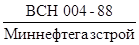
8.2. Укладочные (изоляционно-укладочные) работы следует выполнять преимущественно непрерывными методами колонной трубоукладчиков, оснащенных троллейными подвесками.
Если трубопровод заранее, до укладки, заполирован или смонтирован из труб с заводским изоляционным покрытием, то при его укладке необходимо применять подвески с катками, облицованными эластичным материалом (полиуретаном), или подвески с пневмошинами.
При относительно небольших объемах работ, а также на участках трассы со сложными условиями прокладки допускается использование цикличных методов укладки предварительно заизолированного трубопровода колонной трубоукладчиков, оснащенных мягкими монтажными полотенцами.
8.3. На участках трассы, где предусматривается большое количество технологических разрывов и в местах частого чередования углов поворота трассы, а также на участках с продольным уклоном рельефа местности свыше 15° укладку (монтаж) трубопровода следует производить методом последовательного наращивания из одиночных труб или секций (плетей) непосредственно в проектном положении трубопровода (на дне траншеи).
8.4. Выбор метода производства укладочных работ зависит от общей схемы организации строительства, принятой в проекте, местных условий и подтверждается технико-экономическими обоснованиями.
8.5. Ось трубопровода, подлежащего укладке, должна находиться не дальше 2 м от кромки траншеи. Если это условие не соблюдено, то перед опуском трубопровода в траншею его следует переместить в требуемое исходное положение.
8.6. При проведении изоляционно-укладочных работ на участках трассы с низкой несущей способностью грунтов, где степень защемления трубопровода после его засыпки невелика и вследствие этого возможны явления потери устойчивости, необходимо с особой тщательностью следить за правильностью положения укладываемого трубопровода, не допуская сверхнормативных отклонений его оси от проектной (как в горизонтальной, так и в вертикальной плоскости).
8.7. Допускается производить укладку трубопровода с бровки траншеи непосредственно на воду с последующим погружением на проектные отметки и закреплением. Методы балластировки и конкретные места установки утяжеляющих грузов определяются проектом и уточняются проектом производства работ.
8.8. С целью рассредоточения нагрузок на поверхность строительной полосы при укладке трубопровода (в условиях болот) необходимо избегать группировки трубоукладчиков, используя в отличие от типовой равномерную расстановку трубоукладчиков с расстояниями между ними: 12 - 15 м для трубопроводов диаметром до 1020 мм; 15 - 18 м для трубопроводов диаметром 1220 мм и 17 - 22 м для трубопроводов диаметром 1420 мм.
8.9. При выполнении изоляционно-укладочных работ на трубопроводе, смонтированном из обычных (неизолированных) труб, очистку и изоляцию трубопровода следует производить с помощью комбинированной машины (комбайна), которую располагают в средней части колонны. В этом случае за комбайном трубопровод следует поддерживать трубоукладчиками, оснащенными подвесками с эластичными катками.
8.10. Изоляционно-укладочные работы при трассовой изоляции труб следует выполнять совмещенным методом с использованием трубоукладчиков, количество и тип которых зависит от диаметра трубопровода, за исключением наиболее сложных участков трассы (например, с низкой несущей способностью грунтов), где для снижения удельных давлений на поверхность строительной полосы изоляционно-укладочные работы следует выполнять раздельным методом. При этом работы ведут в два этапа: на первом производят очистку и изоляцию трубопровода в сопровождении трех-пяти трубоукладчиков (в зависимости от диаметра трубопровода), на втором - укладку изолированного трубопровода в траншею (аналогично тому, как это выполняется при использовании труб с заводской изоляцией). Разрыв по времени между этапами должен составлять, как правило, не более 1 сут.
8.11. В изоляционно-укладочной колонне в холодное время года или при наличии на трубопроводе влаги необходимо иметь сушильную установку, которую располагают в головной части колонны.
8.12. При работе на заболоченных территориях (учитывая возможность появления на трубах следов коррозии в условиях повышенной влажности) в состав колонн в ряде случаев целесообразно вводить дополнительно по одной очистной машине, ее следует помещать между вторым и третьим по ходу колонны трубоукладчиками.
8.13. Не допускаются продолжительные остановки изоляционно-укладочной колонны на заболоченных и обводненных участках трассы, что может привести к просадке грунта под гусеницами трубоукладчика или под покрытием технологической дороги, а также к повреждению дорожной одежды и опрокидывания трубоукладчиков.
8.14. На время организационных длительных перерывов в работе (более 2 сут) не рекомендуется (особенно в весенний период) оставлять изоляционно-укладочную колонну, насаженную на трубопровод, на пониженных участках трассы, так как при этом возможно скопление в полости укладываемого трубопровода больших объемов воды вследствие таяния снегов, от веса которой может произойти опрокидывание трубоукладчиков или поломка трубопровода.
8.15. Минимальное расстояние от бровки (откоса) траншеи до ближайшей гусеницы трубоукладчика следует определять в соответствии с расчетом, исходя из физико-механических свойств грунта и удельного давления от гусеницы. Такой расчет выполняют на стадии разработки ППР.
8.16. Особое внимание следует уделить процессу входа укладочной колонны в работу («насадки») и выхода из работы («схода») соответственно в начале и в конце плети. При выходе колонны из работы для предотвращения опрокидывания трубоукладчиков (вследствие резкого роста вылета их крюков) следует за 100 - 150 м до подхода колонны к концу плети либо вводить в работу дополнительный трубоукладчик, либо обеспечивать плавное смещение курса трубоукладчиков ближе в сторону кромки траншеи, но без выхода их на призму обрушения откоса.
Операции по «насадке» и «сходу» колонны следует выполнять по схемам, специально разработанным в составе ППР; при этом должен быть предусмотрен строгий синхронизированный порядок замещения и передвижения трубоукладчиков.
8.17. При совмещенном способе изоляционно-укладочных работ их выполнение допускается при температуре окружающего воздуха не ниже минус 30 °С в соответствии с техническими условиями на изоляционные материалы.
8.18. При раздельном способе производства изоляционно-укладочных работ очистку, огрунтовку и изоляцию трубопровода разрешается производить при температуре окружающего воздуха минус 30 °С и выше, а укладку изолированного трубопровода - не ниже минус 20 °С.
8.19. Работы по укладке нескольких трубопроводов в общую траншею можно производить как одновременно, так и последовательно.
При одновременной укладке возможны две схемы производства работ: 1) одновременный монтаж всех ниток непосредственно в проектном положении (на дне траншеи) из отдельных труб или секций; 2) поочередный спуск сваренных плетей с бровки траншей.
При последовательной укладке все нитки, предварительно сваренные на строительной полосе, укладывают в траншею, начиная с ближайшей к ней, при этом данная нитка должна занять положение в траншее, наиболее удаленное от строительной полосы.
Если при прокладке нескольких трубопроводов ширина траншеи по низу и грунтовые условия позволяют обеспечить проход строительных машин, то часть ниток может быть смонтирована и заизолирована непосредственно на дне траншеи, а остальные должны быть уложены со строительной полосы.
При последовательной укладке в одну траншею нескольких трубопроводов должны быть приняты меры по сохранности уже уложенных трубопроводов.
В процессе работ по укладке нескольких трубопроводов в общую траншею необходимо обеспечивать заданное проектом расстояние между осями смежных трубопроводов; для этого можно использовать балластирующие устройства или прерывистые присыпки в виде призм в сухих грунтах.
8.20. При одновременном строительстве многониточных трубопроводов в раздельных траншеях укладку начинают с левого крайнего (по ходу движения строительных бригад) трубопровода, чтобы исключить необходимость устройства проездов строительной техники над уже проложенными трубопроводами.
8.21. Монтаж технологических захлестов следует выполнять после укладки трубопровода в проектное положение.
8.22. Количество трубоукладчиков, занятых на укладке трубопровода, их грузовые характеристики, а также расстояния между ними в колонне следует определять расчетным путем в соответствии с методиками, приведенными в рекомендуемых приложениях 9 и 10.
Примерные расстояния между
кранами-трубоукладчиками при разных способах изоляционно-укладочных работ для
трубопроводов диаметром 57 - 530 мм приведены в рекомендуемом приложении 11.
Для трубопроводов диаметром более 550 мм схемы укладки приведены в  «Строительство
магистральных трубопроводов. Технология и организация».
«Строительство
магистральных трубопроводов. Технология и организация».
8.23. При прокладке надземных трубопроводов (на опорах или на эстакадах), где в единое конструктивное решение могут входить несколько ниток трубопроводов, работы по укладке можно осуществлять по трем схемам:
монтаж отдельных ниток трубопроводов на опорах (эстакаде);
одновременный монтаж всех ниток трубопроводов;
комбинированный метод, являющийся сочетанием двух предыдущих методов и предусматривающий монтаж одной или нескольких ниток трубопровода по разным схемам.
Схемы укладки выбирают в зависимости от конструктивных решений прокладки, очередности ввода (этапов пускового комплекса) и конкретного назначения отдельных трубопроводов.
8.24. Монтаж ригелей и опорных элементов надземных трубопроводов следует выполнять после оформления акта приемки свайных опор, которым подтверждается их соответствие проекту.
8.25. Монтаж надземных трубопроводов диаметром 550 мм и более следует производить из трехтрубных секций, свариваемых в базовых условиях или на трубосварочных стендах. Надземные трубопроводы диаметром менее 550 мм из-за их повышенной гибкости следует сооружать из двухтрубных секций.
8.26. При строительстве надземных трубопроводов сборка и сварка секций в нитку должна производиться на установленных опорах. Для поддержания свисающей консоли плети трубопровода и центратора, устранения прогиба, обусловленного весом плети, следует применять дополнительный трубоукладчик, оснащенный мягким монтажным полотенцем.
8.27. В местах монтажа компенсаторов необходимо оставлять технологические разрывы. Сборку стыков при монтаже компенсаторов следует выполнять с применением наружных центраторов.
8.28. Перед вваркой П-образных компенсаторов в нитку их необходимо подвергать предварительной растяжке (или поджатию). Величина растяжки компенсатора определяется проектом.
8.29. Монтаж замыкающих стыков следует производить при температуре окружающего воздуха, регламентированной в проекте.
8.30. После сварки трубопровода в нитку следует установить опорные элементы на подвижных опорах.
8.51. После завершения монтажа трубопровода на опорах следует выполнить подводку ригелей под трубопровод с заданным усилием, величина которого указывается в рабочих чертежах.
8.32. Подземную или подводную укладку обетонированного трубопровода или трубопровода, оснащенного балластировочными утяжелителями кольцевого типа, в зависимости от гидрогеологических условий ведут следующими методами:
сборкой и сваркой одиночных труб непосредственно в траншее, протаскиванием длинномерных плетей по дну траншеи или водоема;
сплавом длинномерной плети, оснащенной поплавками, по обводненной траншее или водоему с последующей отстроповкой поплавков;
с бровки траншеи колонной трубоукладчиков способом «перехвата» или «переезда»;
путем разработки траншеи под смонтированной на поверхности болота по створу перехода плетью трубопровода (метод «подкопа»).
8.33. Протаскивание плети необходимо производить без длительных перерывов (не более 12 ч), во избежание присоса, заноса траншеи или примерзания плети (в холодное время); при большом уклоне местности в зоне расположения береговой монтажной площадки и урезов для удержания плети от самопроизвольного сползания следует использовать подвижной якорь.
Конструкция (вес, габариты) плети определяется расчетом.
8.34. При сплаве расстояние между поплавками, считая заданной их грузоподъемность, определяют в ППР по формуле
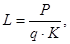
где L - расстояние между поплавками;
Р - грузоподъемность поплавков;
q - вес единицы длины обетонированного трубопровода под водой;
K - коэффициент запаса положительной плавучести (K = 1,2 - 2,0).
8.35. Укладку сплавленной плети трубопровода производят последовательной отстроповкой; с этой целью каждый из них оснащен механическим затвором (замком)*.
* Работой затворов управляют дистанционно с одного из берегов (или с плавсредства) с помощью специального троса.
8.36. В целях безопасности производства работ не допускается нахождение людей в момент отстроповки поплавков на расстоянии ближе 20 м от места отстроповки.
Для перемещения персонала вдоль плавающего трубопровода следует использовать инвентарные плавсредства (надувные лодки, плоты и т.п.). Не допускается ходить по плавающему трубопроводу, а также устраивать помосты с использованием в качестве одной из опор плавающего трубопровода.
8.37. Поплавки должны быть связаны между собой канатом, проложенным вдоль плети и предназначенным для организованного сбора поплавков на берегу после освобождения их от нагрузки.
8.38. Укладка обетонированной плети или плети, оснащенной кольцевыми балластировочными утяжелителями, методом «подкопа» применяется на участках трассы, где не обеспечивается устойчивость стенок траншеи на время производства укладочных работ;
при этом плеть предварительно протаскивают вдоль оси прокладки по поверхности болота, затем под трубопроводом отрывают траншею, куда плеть опускается под действием собственного веса. Для рытья траншеи следует применять специальные экскаваторы (трубозаглубители). Для защиты трубопровода от механических повреждений экскаватором следует использовать инвентарные щиты, не перемещаемые от забоя к забою.
8.39. На криволинейных участках трассы (в отдельных случаях и на прямолинейных) допускается укладка обетонированного трубопровода с бровки траншеи двумя способами: «перехватом» или «переездом». При первом способе каждый трубоукладчик, по мере укладки, освобождаясь от нагрузки, перемещается последовательно к впереди стоящему трубоукладчику; при втором способе последний трубоукладчик, освободившись от нагрузки после опуска плети, объезжает колонну и становится впереди, после чего он снова начинает воспринимать нагрузку.
Высота подъема трубопровода над строительной полосой не должна превышать 0,5 м.
Количество трубоукладчиков и их расстановка определяются по методике, изложенной в приложении 9. Необходимое для укладки число трубоукладчиков принимается равным N + 1.
При расчете необходимо учитывать, что изгибная жесткость EJ обетонированного трубопровода повышается на 25 - 30 % (по сравнению с обычным).
В качестве грузозахватной оснастки следует использовать мягкие монтажные полотенца.
8.40. Радиус допустимого упругого изгиба трубопровода (он прямо пропорционален его жесткости) со сплошным бетонным покрытием (без прорезей) определяется проектом по формуле
rоб = r (1,03 + 0,0041 dв),
где r - допустимый радиус упругого изгиба необетонированного трубопровода, принимаемый по СНиП III-42-80;
d - толщина бетонного покрытия, мм.
8.41. Обетонированные трубы, получаемые с завода, должны иметь маркировку с указанием их массы с точностью до 7 % и величины отрицательной плавучести (вес под водой) при объемно весе воды 1000 кг/м3.
8.42. Тяговые усилия для протаскивания обетонированной плети трубопровода определяют расчетом, выполненным на стадии разработки ППР. Значения коэффициентов трения и трогания приведены в рекомендуемом приложении 12. Тяговые средства и расцветку выбирают по максимальному значению расчетного тягового усилия.
8.43. Расчет тяговых усилий следует производить по методике,
изложенной в 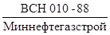
9. СТРОИТЕЛЬСТВО ПЕРЕХОДОВ ТРУБОПРОВОДОВ ЧЕРЕЗ ЕСТЕСТВЕННЫЕ И ИСКУССТВЕННЫЕ ПРЕПЯТСТВИЯ
9.1. Работы по строительству переходов через естественные и искусственные препятствия следует производить с опережением в соответствии с требованиями разд. 8 СНиП III-42-80 и настоящих ВСН.
9.2. Строительство многопролетных и однопролетных переходов следует выполнять по индивидуальным проектам производства работ с предусмотрением мер, обеспечивающих безопасность при производстве работ и надежность конструкций в процессе эксплуатации.
9.3. Сборные железобетонные элементы опор (плиты, сваи, стойки, ригели, подушки, кольца и т.д.), а также арматурные каркасы и щиты опалубки (по возможности инвентарные) для монолитных бетонных и железобетонных опор необходимо доставлять на строительную площадку перехода в готовом виде в соответствии с проектом.
9.4. Строительство однопролетных переходов, не имеющих по проекту искусственных опор и компенсаторов, следует осуществлять по ходу трассовых работ. В этом случае плети трубопровода на всю длину перехода (с учетом перекрытия пролета перехода) сваривают и укладывают с помощью кранов-трубоукладчиков путем надвижки плети с одного берега на другой.
10. СТРОИТЕЛЬСТВО ТРУБОПРОВОДОВ В ОСОБЫХ ПРИРОДНЫХ УСЛОВИЯХ
Строительство через болота и озера
10.1. Строительство промысловых трубопроводов в особых природных условиях следует выполнять в соответствии с разд. 9 (пп. 9.1 - 9.6 и 9.32 - 9.36) СНиП III-42-80 и требованиями разд. 10 настоящих ВСН.
10.2. До начала строительно-монтажных работ по прокладке трубопровода на болотах и обводненной местности выполняет следующие мероприятия:
выбор участков трассы для первоочередного строительства в зимнее и летнее время;
составление графиков производства строительно-монтажных работ и поставка необходимых машин, материалов и оборудования;
выбор мест и устройство площадок для складирования материалов и базирования техники, а также мест для вертолетных площадок;
разработка транспортной схемы завоза материалов, вариантов объездов непроходимых участков и преодоление труднопроходимых;
определение границ участков работы потоков с учетом характеристик сложных участков трассы;
оснащение производственных участков необходимыми машинами, оборудованием, материалами и рабочей силой;
устройство сварочно-монтажных и изоляционных баз, полигонов для обетонирования труб и обустройства жилых трассовых городков;
строительство временных технологических дорог и подъездов к ним, а также водопропускных и осушительных сооружений на подъездах к трассе и вдоль нее;
устройство и оснащение необходимым оборудованием береговых монтажных площадок при прокладке трубопроводов методом сплава.
10.3. Способы производства строительно-монтажных работ на болотах, заболоченной и обводненной местности должны определяться проектами организации строительства и выполняться в соответствии с требованиями действующих нормативных документов.
10.4. Комплекс организационных и технологических решений должен предусматривать непрерывный производственный процесс строительства трубопроводов по мере продвижения потока на всем протяжении участка с учетом типа болот, характера обводненности местности, грунтовых условий, диаметра сооружаемого трубопровода и времени года.
10.5. Строительство трубопроводов на сложных участках на болотах и обводненных территориях следует осуществлять, как правило, из труб с заводской изоляцией или из труб, изолированных в базовых условиях.
10.6. При строительстве трубопроводов на болотах и обводненной местности используются способы прокладки трубопроводов приведенные в табл. 2.
|
Грунтовые условия прокладки трубопровода |
Способ прокладки трубопровода |
Особенности технологии прокладки трубопровода |
Метод балластировки и закрепления трубопровода в проектном положении |
|
|
1 |
2 |
3 |
4 |
5 |
|
Зимний |
минеральные устойчивые и многолетнемерзлые грунты |
С бермы траншеи |
Типовые технологические схемы |
Навеска железобетонных пригрузов или балластировка грунтом обратной засыпки с применением НСМ |
|
Промороженные болота |
С зимней дороги |
Устройство специальных дорог с продленным сроком эксплуатации |
Навеска железобетонных пригрузов с зимней дороги |
|
|
Непромораживаемые болота |
С искусственно намороженных и усиленных дорог |
Устройство специальных усиленных дорог со снежно-ледовым покрытием |
Навеска железобетонных пригрузов с зимней дороги или с полосы намывного грунта |
|
|
С полосы намывного грунта |
Предварительный намыв грунта на полосе строительства |
|||
|
Болота сплавинного типа (с промороженной торфяной коркой толщиной не менее 1 м) |
Посредством монтажа на поплавковые опоры |
Устройство поплавковых опор и монтаж на них трубопровода |
Обетонирование труб или навеска кольцевых пригрузов |
|
|
Погружением под действием собственного веса и пригруза |
Устройство майны для погружения трубопровода на глубину до 3 м |
|||
|
Весенний, летний, осенний |
минеральные устойчивые грунты |
С бермы траншеи |
Типовые технологические схемы |
При наличии грунтовых вод навеска железобетонных пригрузов и завинчивание или забивка анкеров с бермы траншеи |
|
Обводненные участки с минеральными грунтами, длительным стоянием поверхностных вод и участки с вечномерзлыми грунтами |
С грунтовой насыпи, отсыпанной на НСМ |
Отсыпка грунтовой насыпи на НСМ |
Навеска железобетонных прирузов, завинчивание или набивка анкеров и балластировка грунтом обратной засыпки с НСМ |
|
|
Болота I и II типов |
С временной технологической дороги различной конструкции |
Сооружение временной технологической дороги |
Навеска железобетонных пригрузов и завинчивание или забивка анкеров с временной дороги |
|
|
Болота III типа обводненные |
Методом сплава или протаскивания |
Устройство береговых монтажных площадок или траншей |
Обетонирование или навеска кольцевых пригрузов |
|
|
Болота II и III типов большой протяженности |
С полосы намытого грунта |
Предварительный намыв грунта на полосе строительства |
Навеска железобетонных пригрузов, завинчивание или забивка анкеров |
10.7. Для прохода сварочно-монтажной и изоляционно-укладочной колонны по болоту при минусовой температуре наружного воздуха толщина промороженного слоя торфяной залежи должна быть не менее 0,8 - 1,0 м.
10.8. Строительство трубопроводов в зимнее время на болотах сплавинного типа и глубиной более 5 м с промороженной торфяной залежью не менее 1 м заключается в предварительном промораживании торфяной залежи и устройстве по ней зимних проездов для автотранспорта и строительных машин, а также для выполнения работ по монтажу, сварке и изоляции трубопровода.
Строительно-монтажные работы в этом случае выполняются по технологическим схемам, применяемым для строительства трубопроводов на устойчивых минеральных грунтах.
10.9. Укладку трубопровода с поплавками в летний период на болотах с высокой обводненностью и на обводненных участках трассы производят в такой последовательности: на монтажной площадке укладывают секции в створе траншеи, сваривают их в нитку, изолируют в зоне стыков, балластируют, разрабатывают траншею в створе прокладки, закрепляют на трубопроводе поплавки. Сплав плети выполняют с помощью лебедки или других тяговых средств, расположенных на противоположном берегу болота или обводненного участка, а также трубоукладчиков, находящихся на монтажной площадке. Сплав осуществляют по мере наращивания последующих секций трубопровода. После окончания сплава трубопровод опускают с помощью регулируемых тяг в проектное положение.
Методом сплава прокладывают, как правило, прямолинейные участки трубопровода. При необходимости слабоизогнутые участки следует устраивать на береговых участках болота.
10.10. Укладку трубопровода методом протаскивания осуществляют на болотах протяженностью не более 100 м. В зимнее время протаскивание осуществляют либо по замороженной поверхности болота, либо по льду, находящемуся в траншее, с последующим спуском его под действием собственного веса после оттаивания верхнего мерзлого слоя торфяной залежи или льда.
10.11. Технологическая последовательность основных работ по сооружению участков трубопровода через болота или обводненную местность методом сплава включает:
разработку траншеи в створе перехода;
организацию монтажной площадки и сварку на ней изолированных и обетонированных труб в секции;
раскладку секций труб с изолированными стыками на площадке параллельно створу перевода или сварку секций в плети и их изоляцию при поставке обычных труб;
укладка головной плети на рольганги, установленные в створе переходов;
подачу плети в обводненный канал трубоукладчиками и ее сплав;
наращивание последующей плети к первой с контролем и изоляцией стыков;
продолжение процесса наращивания и сплава плетей трубопровода до полного перехода через болота.
10.12. Специфика технологии и укладки трубопровода с грунтовой насыпи состоит в предварительной специальной подготовке строительной полосы, заключающейся в спуске поверхностной воды с участка трассы посредством устройства водоотводных канав и водосбросных сооружений, а также возведении грунтовой насыпи, которую с целью снижения расхода грунта и повышения устойчивости полотна в обоснованных ПОС случаях отсыпают на уложенный непосредственно да слабый грунт нетканый синтетический материал или лежневый настил (или на тот и другой). Грунтовую насыпь можно возводить как в летнее, так и в зимнее время.
10.13. Выбор вида укладки обусловливается главным образом несущей способностью и степенью обводненности участка, обосновывается технико-экономическими расчетами и определяется на стадии проектирования.
10.14. Выбор периода укладки трубопровода через болота и участки с переувлажненными минеральными грунтами в насыпях и по поверхности отсыпанного грунта производится в зависимости от проходимости строительной техникой участка, технико-экономической целесообразности сооружения той или иной конструкции временной технологической дороги и определяется расчетом.
10.15. В зависимости от несущей способности торфяного покрова, его мощности, типа и характеристик подстилающего грунта и размеров траншеи разработку траншей на болотах в теплое время года осуществляют:
на болотах с несущей способностью 0,02 - 0,01 МПа - специальными болотными одноковшовыми экскаваторами на базе болотохода или обычными одноковшовыми экскаваторами, установленными на перекидных щитах, пеноволокушах или понтонах;
на болотах с несущей способностью ниже 0,01 МПа - специальными болотными экскаваторами или обычными экскаваторами, установленными на понтонах или пеноволокушах.
10.16. При прокладке трубопровода через озера шириной до 30 м и глубиной до 1 м траншеи разрабатывают с двух противоположных берегов озера с использованием одноковшовых экскаваторов - драглайнов. Для этой цели с каждого берега можно устраивать пионерным способом насыпи, на которых размешаются экскаваторы-драглайны, разрабатывающие траншеи на дне озера. Длина насыпей должна обеспечивать разработку траншеи на дне озера с первой стоянки экскаваторов-драглайнов с каждой стороны до образования общей траншеи на дне водоема.
10.17. При укладке трубопровода через озера шириной более 30 м траншеи можно устраивать в предварительно сделанной насыпи обычным способом. Размеры насыпи, а также крутизна ее откосов должны определяться проектом в зависимости от характеристик грунта дна озера, наличия и скорости течения воды в озере, степени его зарастания растительностью и других факторов. Насыпи следует устраивать заблаговременно и разработку в них траншей проводить после полной осадки насыпи.
10.18. При укладке трубопровода через озера шириной более 50 м и глубиной более 2 м траншеи на дне этих водоемов любых размеров разрабатывают одноковшовыми экскаваторами-драглайнами, установленными на понтонах.
10.19. В зависимости от глубины траншеи и мощности торфяного слоя траншеи на проектную глубину устраивают полностью в торфяной толще или одновременно в торфяном и минеральном грунтах. На участках траншеи в неустойчивых грунтах глубина ее должна быть больше проектной на величину деформации профиля, которая зависит от конкретных грунтовых условий, определяется в ходе выполнения работ и уточняется по проекту. Для уменьшения объема земляных работ в этом случае разрыв по времени землеройной и изоляционно-укладочной колонны должен быть минимальным (не более суток).
10.20. При выполнении работ по устройству траншей в зимнее время во избежание заноса их снегом и смерзания отвала грунта темп разработки траншей должен соответствовать темпу изоляционно-укладочных работ. Технологический разрыв между землеройной и изоляционно-укладочной колонками должен быть минимальным (не более двухсменной производительности землеройной колонны). Устройство траншей в задел в зимних условиях не допускается.
10.21. Технологические схемы устройства траншей в мерзлых грунтах выбирают с учетом глубины промерзания грунта, его прочностных характеристик и времени выполнения работ.
При промерзании грунта на глубину до 0,4 м в обычных грунтовых условиях траншеи устраивают по технологическим схемам и теми же механизмами, что и в обычных условиях. При промерзании грунта на глубину более 0,4 м устройство траншей одноковшовыми экскаваторами требует предварительного рыхления мерзлого грунта механическими рыхлителями или буро-взрывным способом.
10.22. При глубине промерзания от 0,4 до 0,8 м траншею разрабатывают одноковшовым экскаватором после предварительного рыхления мерзлого грунта рыхлителем, который производит рыхление грунта на всю глубину промерзания за один технологический прием. При глубине промерзания грунта до 1 м рыхление его осуществляют теми же рыхлителями за два прохода. При большей глубине промерзания траншеи разрабатывают одноковшовыми экскаваторами после предварительного рыхления грунта буровзрывным способом. Бурение шпуров и скважин на полосе траншеи выполняют буровыми машинами в один или два ряда, шпуры заряжаются ВВ и взрываются. При глубине промерзания грунта до 1,5 м рыхление грунта для разработки траншей, расположенных на расстояния до 10 м от сооружений, производят шпуровым методом, при глубине промерзания грунта более 1,5 м - шпуровым методом с послойным взрыванием. При глубине промерзания грунта более 1,5 м и отсутствии сооружений ближе 10 м рыхление грунта осуществляют скважинным методом.
10.23. Насыпи на болотах I и II типов (глубиной до 2 м) устраивают после удаления торфа на полосе укладки трубопровода на всю глубину. На болотах III типа (без сплавин) насыпь сооружают без выторфовывания. В этом случае торфяная масса выдавливается весом насыпаемого минерального грунта. На болотах III типа с толщиной сплавины до 0,5 м насыпь отсыпают непосредственно на сплавину с погружением ее на дно. При толщине сплавины более 0,5 м целесообразно устройство в ее теле двух продольных прорезей на расстоянии, равном ширине основания насыпи, на которую отсыпается минеральный грунт, с погружением ее на дно болота.
Устройство прорезей осуществляют одноковшовыми экскаваторами, установленными на сланях, или взрывным способом.
10.24. Отсыпку насыпи следует выполнять в таком порядке:
первый слой на 25 - 30 см выше уровня болота отсыпают пионерным способом самосвалами, разгружающими материал отсыпки на берегу болота, затем бульдозерами его сдвигают в сторону наращивания насыпи. Отсыпку можно вести с одного или с двух сторон болота. После отсыпки первого слоя на полную длину насыпи сооружают второй слой до проектной отметки низа трубы с последующим уплотнением. Третий слой до проектной отметки насылают после полной осадки насыпи.
10.25. На залитых водой болотах II и III типов большой протяженности при наличии в основании болот хорошо дренированных гравийно-песчаных, песчаных или супесчаных грунтов целесообразно строительную полосу сооружать посредством намыва грунтовой дамбы гидромеханизированным способом, при наличии вблизи трассы достаточных объемов воды для этих целей.
10.26. Для намыва таких дамб следует применять безэстакадный продольно-встречный способ гидронамыва, который должен осуществляться специальными подразделениями, заблаговременно, до начала основных работ. Дамбы намывают участками шириной до 55 м и протяженностью 200 - 350 м, так называемыми «картами намыва». Для образования «карты намыва» по его контуру устраивают грунтовые валики или устанавливают сборно-разборные деревянные щиты, задерживающие намытый грунт на «карте намыва».
Гидросмесь (пульпу) на намываемую площадку подают торцевым или рассредоточенным способом с низких инвентарных опор. Для отвода воды в конце карты намыва устраивают пруды-отстойники и водоотводные канавы. Грунтовые дамбы под магистральные трубопроводы следует намывать с запасом на осадку.
Строительство в условиях пустынь и орошаемого земледелия
10.27. При сооружении промысловых трубопроводов в условиях пустынь на солончаках, такырах и песках следует применять грунтовые конструкции проездов с покрытиями или без покрытия в зависимости от грунтовых условий в соответствии с ПОС.
10.28. Временные проезды для строительной техники на песках устраивают с помощью бульдозера с созданием незаносимого песком поперечного профиля обтекаемой формы.
10.29. На участках трассы с сорами, в солончаках и такырах насыпь для проездов целесообразно отсыпать на нетканые синтетические материалы (геотекстиль). При этом допускается использовать местный, подстилающий песок и грунт.
10.30. Траншеи в условиях пустынь устраивают после срезки барханов в соответствии с проектом.
10.51. При многониточной прокладке трубопроводов в одной траншее в условиях песчано-барханных пустынь широкие траншеи следует, как правило, разрабатывать бульдозерами продольно-поперечным способом.
10.32. В песчаных сыпучих грунтах траншеи следует разрабатывать одноковшовыми экскаваторами или бульдозерами.
10.33. Во влажных или естественно закрепленных песках при прокладке одной или двух ниток промысловых трубопроводов в одной траншее разработку следует вести роторным экскаватором с откосниками до проектной глубины или разрабатывать верхний слой на глубину 90 см бульдозерами с последующей доработкой траншеи одноковшовыми экскаваторами до проектного профиля.
10.34. Сооружение промысловых трубопроводов на поливных землях выполняют в наиболее благоприятный, как правило, в невегетационный период года. При рекультивации земель следует восстанавливать поливные борозды.
10.35. Для передвижения машин через оросительные каналы и арыки необходимо устраивать переезды с водопропуском в соответствии с проектом.
При разработке траншеи на пересечениях арыков оставляют перемычки, которые разрабатывают непосредственно во время укладки трубопровода с устройством водопропуска через траншею во избежание перерывов в поливе полей.
10.36. Траншеи в грунтах нормальной влажности и плотных устойчивых минеральных грунтах следует разрабатывать роторными траншейными экскаваторами. Траншеи глубиной до 1,0 - 1,2 м для трубопроводов малых диаметров целесообразно разрабатывать плужными канавокопателями. Для разработки траншей в переувлажненных малоустойчивых грунтах следует применять одноковшовые экскаваторы с обратной лопатой на уширенном гусеничном ходу.
11. ОСНОВНЫЕ ПОЛОЖЕНИЯ ПО ЭЛЕКТРОХИМИЧЕСКОЙ ЗАЩИТЕ ТРУБОПРОВОДОВ ОТ ПОДЗЕМНОЙ КОРРОЗИИ
11.1. Сооружение электрохимической защиты трубопроводов
следует осуществлять в соответствии с проектом (рабочим проектом) и
требованиями разд. 10 СНиП 2.05.06-85, ГОСТ
25812-83, СНиП III-42-80 и 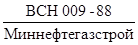
11.2. Работы по сооружению электрохимической защиты необходимо проводить в два этапа.
На первом этапе необходимо выполнять следующие работы:
разметку трассы ЛЭП и кабелей, подготовку строительной площадки;
разработку грунта под монтаж оборудования и токопроводящих линий;
прокладку подземных кабелей;
монтаж катодных выводов от перемычек и узлов токоотводов на трубопроводах;
монтаж контрольно-измерительных пунктов (КИП);
установку или закладку в сооружаемые фундаменты несущих опорных конструкций, подставок, рам для монтажа оборудования.
Работы первого этапа следует вести одновременно с основными работами по линейной части трубопроводов.
На втором этапе необходимо осуществлять работы по установке оборудования, подключению к нему электрических кабелей и проводов, а также индивидуальное опробование электрических коммуникаций и установочного оборудования.
Работы второго этапа должны быть выполнены после окончания основных видов строительных работ и одновременно с работами специализированных монтажных организаций, осуществляющих опробование установок электрохимической «защиты по совмещенному графику».
12. ОЧИСТКА ПОЛОСТИ И ИСПЫТАНИЕ
12.1. Очистку полости и испытание промысловых трубопроводов
необходимо осуществлять в соответствии с требованиями разд. 11 (пп. 11.1 -
11.3; 11.5 - 11.8; 11.11; 11.13 - 11.14; 11.20; 11.22 - 11.23; 11.25, абз. 3;
11.26; 11.28; 11.30 - 11.34; 11.36 - 11.37; 11.40 - 11.43) СНиП
III-42-80, требованиями настоящих ВCН и 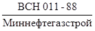
12.2. Способы, параметры и схемы проведения очистки полости и испытания промысловых трубопроводов устанавливаются рабочим проектом и ПОСом.
12.3. Промысловые трубопроводы очищают и испытывают по специальной рабочей инструкции, за исключением промысловых нефтепроводов и нефтегазопроводов нефтяных промыслов диаметром:
менее 350 мм с рабочим давлением менее 2,0 МПа, очистку полости и испытание которых выполняют по типовой инструкции, разрабатываемой заказчиком и строительно-монтажной организацией применительно к конкретному промыслу. Специальная рабочая инструкция на очистку полости и испытание составляется заказчиком и строительно-монтажной организацией по каждому конкретному трубопроводу с учетом местных условий производства работ, согласовывается с проектной организацией и утверждается председателем комиссии по проведению испытаний трубопроводов.
Специальная рабочая инструкция по очистке полости, испытанию на прочность и проверке на герметичность промысловых трубопроводов с использованием природного газа должна быть согласована по объектам Мингазпрома с органами государственного газового надзора на местах, а по объектам Миннефтепрома с организациями ВПО «Союзнефтегазпереработка».
12.4. Очистку полости трубопроводов выполняют промывкой, продувкой или протягиванием очистных устройств.
12.5. Промывку производят с пропуском поршней-разделителей и предварительной заливкой воды в трубопровод.
Промывка без пропуска поршней-разделителей допускается для трубопроводов диаметром до 219 мм (включительно) или при наличии крутоизогнутых вставок радиусом менее 5 диаметров трубопровода.
Разрешается совмещение очистки полости с удалением жидкости после гидроиспытания трубопровода (см. п. 12.17 настоящих ВСН).
При промывке и удалении из трубопроводов воды допускается пропуск поршней-разделителей через линейную арматуру.
12.6. Продувка производится с пропуском очистных поршней на трубопроводах диаметром 219 мм и более.
Очистные поршни пропускают по участкам трубопровода под давлением сжатого воздуха или газа, поступающего из ресивера (баллона), создаваемым на прилегающем участке или из источника природного газа.
Для продувки с пропуском поршня давление воздуха (или газа) в ресивере при соотношении объемов ресивера и продуваемого участка 1:1 определяют по табл. 3.
Продувку скоростным потоком воздуха или газа без пропуска поршня осуществляют на трубопроводах диаметром до 219 мм (включительно) или при наличии крутоизогнутых вставок радиусом менее 5 диаметров трубопровода.
Давление воздуха или газа в ресивере для продувки
|
Давление в ресивере, не менее, МПа (кгс/см2) |
||
|
для трубопроводов, очищенных протягиванием очистных устройств |
для трубопроводов, не очищенных протягиванием очистных устройств |
|
|
До 250 |
1 (10) |
2 (20) |
|
От 300 до 400 |
0,6 (6) |
1,2 (12) |
|
От 500 до 800 |
0,5 (5) |
1 (10) |
|
От 1000 до 1400 |
0,4 (4) |
0,8 (8) |
На участках трубопроводов диаметром более 219 мм с крутоизогнутыми вставками радиусом менее 5 диаметров допускается продувка без пропуска очистных поршней при условии предварительной очистки протягиванием очистных устройств в процессе сборке и сварки трубопровода в нитку.
Для продувки скоростным потоком воздуха или газа без пропуска поршня давление в ресивере определяют по табл. 3 при соотношении объемов ресивера продуваемого участка 2:1.
12.7. На трубопроводах диаметром до 325 мм, монтируемых без внутренних центраторов, очистку полости следует производить протягиванием очистных устройств в процессе сборки и сварки трубопроводов в нитку.
При очистке полости протягиванием очистного устройства в процессе сборки и сварки трубопровода в нитку по согласованию с заказчиком промывку разрешается не производить.
В качестве очистных устройств при протягивании следует использовать специальные приспособления, оборудованные очистными щетками или скребками, а также очистные поршни, применяемые для продувки трубопроводов.
12.8. Очистку полости трубопроводов, монтируемых на опорах, следует производить продувкой с пропуском поршней-разделителей под давлением сжатого воздуха или природного газа со скоростью не более 10 км/ч, за исключением случаев, оговоренных в пп. 12.6, 12.7 настоящих ВСН.
12.9. Трубопроводы необходимо испытывать в соответствии с рабочим проектом гидравлическим, пневматическим или комбинированным методом. Величину испытательных давлений определяют в проекте с учетом табл. 4.
Давление при комбинированном испытании на прочность должно быть равно в верхней точке 1,1 Рраб, а в нижней точке не превышать заводского испытательного давления труб; продолжительность выдержки под этим давлением 12 ч.
12.10. Проверку на герметичность участка или трубопровода в целом производят после испытания на прочность и снижения испытательного давления до максимального рабочего (Рраб), принимаемого по проекту, в течение времени, необходимого для осмотра трассы, но не менее 12 ч.
12.11. При температуре окружающей среди трубопровода ниже 0 °С допускается при наличии теплотехнического расчета, выполненного проектной организацией, проведение гидравлического испытания подогретой водой от теплообменников водоподогревательных установок, коммуникаций горячего водоснабжения и т.п. или жидкостями с температурой замерзания ниже температуры окружающей среды (рекомендуемые приложения 15 и 14).
12.12. Для гидравлического испытания проектом может быть предусмотрено применение подземных вод из сеноманских или других геологических горизонтов, имеющих пониженную температуру замерзания, с добавлением при необходимости ингибиторов коррозии, а для трубопроводов диаметром до 219 мм при отрицательных температурах - жидкостей, имеющих пониженную температуру замерзания (антифризы). Использованной антифриз следует утилизировать.
Использование для гидравлического и комбинированного испытания жидкостей с пониженной температурой замерзания разрешается только по специальной технологии, указанной в проекте.
12.13. В условиях отрицательных температур схема проведения гидравлических испытаний водой должна предусматривать возможность удаления из трубопровода опрессовочной воды с помощью заранее установленных поршней-разделителей, перемещающихся под давлением воздуха или газа.
12.14. Трубопровод считается выдержавшим испытания на прочность и проверку на герметичность, если за время испытания трубопровода на прочность труба не разрушилась, а при проверке на герметичность давление остается неизменным и не будут обнаружены утечки.
Параметры испытания на прочность участков промысловых трубопроводов
|
Категория участка трубопровода по ВСН 51-5/2. 38-85 |
Назначение участков трубопроводов |
Этапы испытания на прочность |
Давление в верхней точке |
Продолжительность, ч |
|
|
1 |
2 |
3 |
4 |
5 |
6 |
|
В, I |
Переходы через водные преграды, укладываемые с помощью подводно-технических средств: |
||||
|
1.1 |
а) судоходные и несудоходные с зеркалом воды в межень 25 м и более в русловой части и прибрежные участки длиной не менее 25 и каждый (от среднемеженного горизонта воды) |
Первый этап - после сварки на стапеле или на площадке перехода целиком или отдельными плетями |
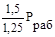 |
6 6 |
|
|
Второй этап - после укладки перехода |
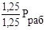 |
12 12 |
|||
|
Третий этап - одновременно со всем трубопроводом |
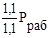 |
24 12 |
|||
|
1.2 |
б) несудоходные с зеркалом воды в межень от 11 до 25 м в русловой части |
То же |
То же |
То же |
|
|
I |
Переходы через дороги: |
||||
|
2.1 |
а) железные дороги общей сети, включая участки по обе стороны дороги длиной не менее 40 м каждый от осей крайних путей, но не менее 25 м от подошвы насыпи земляного полотна дороги |
Первый этап - после укладки |
1,5 Рраб |
6 |
|
|
Второй этап - одновременно со всем трубопроводом |
|
24 12 |
|||
|
2.2 |
б) подъездные железные дороги промышленных предприятий, включая участки по обе стороны дороги длиной не менее 25 м каждый от осей крайних путей |
То же |
То же |
То же |
|
|
2.3 |
в) автомобильные дороги общего пользования I-а, I-б, II, III категорий и подъездные автомобильные дороги промышленных предприятий 1-в, II-в категорий, внутренние межплощадочные автомобильные дороги промышленных предприятий I-в, II-в категорий, включая участки длиной не менее 25 м каждый по обе стороны дороги от подошвы насыпи или бровки выемки земляного полотна дороги |
То же |
То же |
То же |
|
|
3.1 |
В |
Трубопроводы: ввода-вывода, транзитные, обвязки кустов скважин |
Первый этап - после укладки или крепления на опорах |
||
|
Второй этап - одновременно со всем трубопроводом |
|||||
|
Переходы через водные преграды, укладываемые без применения подводно-технических средств: |
|||||
|
3.2 |
В, I |
а) несудоходные с зеркалом воды в межень 25 м и более в русловой части и прибрежные участки длиной не менее 25 м каждый (от среднемеженного горизонта воды) |
То же |
То же |
То же |
|
3.3 |
I |
б) несудоходные с зеркалом воды в межень от 11 до 25 м в русловой части |
То же |
То же |
То же |
|
3.4 |
I |
в) поймы рек по горизонту высоких вод 10 %-ной обеспеченности нефте- и нефтепродуктопроводов |
То же |
То же |
То же |
|
3.5 |
I |
Узлы запуска и приема очистных устройств, а также примыкающие к ним участки трубопроводов по 100 м |
То же |
То же |
То же |
|
3.6 |
I |
Участки газопроводов, примыкающие к площадкам скважин на расстоянии 150 м от ограждения |
То же |
То же |
То же |
|
3.7 |
I |
Участки между охранными кранами УКПГ, КС, ДКС, ГС, ПХГ |
То же |
То же |
То же |
|
3.8 |
В, I |
Переходы через водные преграды метанолопроводов и других трубопроводов, транспортирующих вредные вещества |
То же |
То же |
То же |
|
4 |
I |
Пересечения с воздушными линиями электропередачи |
Первый этап - до укладки и засыпки или крепления на опорах |
|
6 6 |
|
напряжением 500 кВ и более |
Второй этап - одновременно со всем трубопроводом |
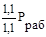 |
24 12 |
||
|
5 |
I, II, III, IV |
Трубопроводы и их участки, кроме указанных выше |
В один этап одновременно со всем трубопроводом |
|
24 12 |
Примечания: 1. В любой точке испытываемого участка трубопровода испытательное давление на прочность не должно превышать наименьшего из гарантированных заводами испытательных давлений (Рзав) на трубы, арматуру, фитинги, узлы и оборудование, установленные на испытываемом участке. Рраб - рабочее (нормативное) давление, устанавливаемое рабочим проектом (проектом).
2. В числителе указана величина давления и продолжительности гидравлического испытания, а в знаменателе - пневматического испытания.
3. Участки трубопроводов по поз. 2.1; 2.2; 2.3 настоящей таблицы на первом этапе испытывают только гидравлически.
4. Переходы через водные преграды (поз. 3.2; 3.3 настоящей таблицы) шириной менее 30 м и глубиной менее 1,5 м испытывают в один этап одновременно со всем трубопроводом.
5. Участки трубопроводов по поз. 3.2; 3.3 настоящей таблицы при отрицательных температурах допускается, по согласованию с проектной организацией и заказчиком, испытывать в один этап одновременно со всей трассой трубопровода.
6. Участки I категории, приведенные в поз. 5 настоящей таблицы, по усмотрению проектной организации, в зависимости от конкретных условий, можно испытывать в два этапа, что должно быть отражено в проекте.
7. Участки трубопроводов по поз. 1.1 - 1.2; 2.1 - 2.3; 3.1 - 3.8; 4 настоящей таблицы при соответствующем обосновании допускается испытывать одновременно со всем трубопроводом на давление, соответствующее давлению испытания этих участков на первом этапе (на 1,25 Рраб или 1,5 Рраб) При этом, если в трубопроводе имеются участки по поз. 2.1; 2.2; 2.3, то весь трубопровод испытывают гидравлическим способом.
8. Трубопроводы систем заводнения и захоронения пластовых и сточных вод испытывают давлением, равным 1,25 Рраб, в течение 12 ч.
9. Промысловые трубопроводы с рабочим давлением до 2,5 МПа испытывает одновременно на прочность и герметичность на единое испытательное давление Рисп, равное 3,2 МПа, но не более давления испытания установленной запорной арматуры в течение 12 ч.
12.15. При многониточной прокладке промысловых трубопроводов допускается одновременное их испытание гидравлическим или пневматическим способом.
12.16. Промысловые трубопроводы для транспортировки сероводородсодержащего природного газа или газового конденсата в период комплексного опробования подлежат осушке силами эксплуатирующей организации.
12.17. Удаление воды должно предусматриваться только для газопроводов способом, указанным в проекте.
Для удаления воды из газопровода пропускают последовательно поршни-разделители под давлением сжатого воздуха или природного газа в два этапа:
предварительный - удаление основного объема воды одним поршнем-разделителем;
контрольный - окончательное удаление воды из газопровода одним поршнем-разделителем.
После испытания участка газопровода комбинированным методом из него необходимо удалить воду в следующем порядке:
первый этап - предварительный слив воды под давлением природного газа или воздуха через патрубки, заранее установленные в мостах закачки воды;
второй этап - с пропуском поршней-разделителей, перемещаемых по трубопроводу под давлением газа или воздуха.
12.18. Контроль за движением поршней-разделителей должен осуществляться по показаниям манометров, измеряющих давление в узлах пуска и приема поршней-разделителей, механических сигнализаторов, и другими методами.
13. ОСНОВНЫЕ ПОЛОЖЕНИЯ ПО ОХРАНЕ ОКРУЖАЮЩЕЙ СРЕДЫ
13.1. Все мероприятия по охране окружающей среды при
строительстве трубопроводов должны быть выполнены в соответствии с разд. 13
СНиП III 42-80, требованиями настоящих ВСН, 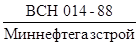
13.2. При разработке ПОС и ППР в части мероприятий по охране окружающей среды необходимо выполнять требования «Основ законодательства СССР и союзных республик о недрах», «Основ земельного законодательства СССР и союзных республик», Закона СССР «Об охране и использовании животного мира», Закона СССР «Об охране атмосферного воздуха», Закона СССР «Об охране и использовании памятников истории и культуры», а также постановления местных Советов по охране природы и рациональному использованию природных ресурсов в регионе.
13.3. При вырубке леса в полосе отвода в составе подготовительных работ следует обеспечить захоронение порубочных остатков в местах, удаленных от водоемов на 500 м и более.
13.4. Не разрешается брать гравий и песок для строительных целей со дна рек, ручьев, озер в местах, не предусмотренных проектом (рабочем проектом) или не согласованных в установленном порядке.
13.5. Время производства взрывных и земляных работ при устройстве траншей на подводных переходах, на каждом отдельном переходе необходимо согласовывать с местными органами рыбоохраны и органами охраны окружающей среды.
Запрещается производство взрывных и земляных работ при устройстве подводных траншей на переходах трубопровода через реки в период нереста и нагула рыбы.
13.6. При обустройстве временных передвижных городков строителей вблизи рек и водоемов, в лесных массивах следует предусматривать места захоронения бытовых отходов, мойки для машин и механизмов с нефтеловушками, противопожарные мероприятия. Следует исключить попадание неочищенных жидких стоков в реки и водоемы.
При демонтаже строительных городков должна быть проведена техническая рекультивация всей территории городка, уборка мусора и захоронение строительных остатков и бытовых отходов.
В заросших песках работы следует производить по возможности с минимальным нарушением растительного покрова.
14. ПРИЕМКА В ЭКСПЛУАТАЦИЮ ЗАКОНЧЕННЫХ СТРОИТЕЛЬСТВОМ ПРОМЫСЛОВЫХ ТРУБОПРОВОДОВ
14.1. Приемку в эксплуатацию законченных строительством
промысловых трубопроводов необходимо производить в соответствии с требованиями 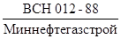
14.2. Приемка в эксплуатацию промысловых трубопроводов, предназначенных для транспортировки сероводородсодержащего газа и нефти, запрещается, если не полностью (согласно проекту) закончены строительством сопутствующие объекты, обеспечивающие безопасность людей и защиту окружающей среды.
14.3. Прием в эксплуатацию шлейфовых трубопроводов производят вместе с ингибиторопроводами и другими установками, предназначенными для защиты металла труб и арматуры от коррозионного воздействия или сероводородного растрескивания.
14.4. Если Государственной приемочной комиссии предъявляется для приемки одновременно несколько промысловых трубопроводов, проложенных между одними и теми же площадками промысловых сооружений, то техническая документация для приемки может быть оформлена единая, как для одного объекта, с оформлением актов на скрытые работы для каждого трубопровода.
ПРИЛОЖЕНИЯ
Рекомендуемое
Величины временных заделов частных потоков:
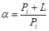 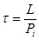
Рекомендуемое
КОМПЛЕКТЫ
землеройных машин для разработки траншей глубиной до 3 м в сезонномерзлых
грунтах с глубиной промерзания до 5 м при темпе работ 500 м в смену
|
Комплекты машин при разработке траншей в грунтах крепостью, кгс/см2 |
|||
|
Ширина |
Глубина |
До 350 |
Более 350 |
|
1,0 |
1,5 |
Роторный траншейный экскаватор с шириной рабочего органа 1 - 1,2 м, глубиной копания до 2,5 м - 2 шт. |
Буровая машина с глубиной бурения шпуров до 2,5 м - 2 шт. Одноковшовый экскаватор вместимостью ковша 0,65 - 1,0 м3 - 1 шт. |
|
1,5 |
2,0 |
Роторный экскаватор с шириной рабочего органа 1,5-1,8 м и глубиной копания до 2,5 м - 2 шт. |
Та же буровая машина - 3 шт. Тот же одноковшовый экскаватор - 2 шт. |
|
1,5 |
2,5 |
Тот же роторный экскаватор - 2 шт. |
Та же буровая машина - 4 шт. Тот же одноковшовый экскаватор - 2 шт. |
|
1,8 |
2,8 |
Бульдозер мощностью 135 кВт - 1 шт. Роторный экскаватор с шириной рабочего органа 1,8 - 2,1 м и глубиной копания до 2,5 м - 2 шт. |
Буровая машина для бурения шпуров (скважин) глубиной более 3 м - 2 шт. Тот же одноковшовый экскаватор - 2 шт. |
|
2,1 |
3,0 |
Тот же бульдозер - 2 шт. |
Та же буровая машина - 3 шт. |
|
Тот же роторный экскаватор - 2 шт. |
Тот же одноковшовый экскаватор - 3 шт. |
||
Примечание. Параметры траншей определены для трубопроводов (в том числе пригружаемых железобетонными пригрузами или анкерными устройствами) диаметром 700 мм и более по соотношениям: ширина B = 1,5 D, для пригружаемых трубопроводов B = 2,2 D; глубина h = D + 1, где D - диаметр трубопровода, м.
Справочное
(извлечение
из 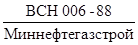
«Строительство магистральных
и промысловых трубопроводов.
Сварка»)
Электроды с целлюлозным покрытием для сварки корневого слоя шва и горячего прохода; электроды с основным покрытием для сварки корневого слоя шва
|
Род покрытий электродов по ГОСТ 9466-75 |
Тип электродов по ГОСТ 9467-75 |
Марка электродовХ |
Диаметр электродов, мм |
Диаметр свариваемых труб, мм |
Нормативный предел прочности металла труб (по ТУ), кгс/мм2 |
Условия прокладки |
|
|
1 |
2 |
3 |
4 |
5 |
6 |
7 |
8 |
|
Для сварки первого (корневого) слоя шва неповоротных стыков труб |
Целлюлозный |
Э42-Ц |
ВСЦ-4, Фокс-Цель, Кобе-6010 |
4,0 |
325 |
До 60 включительно |
Подземная |
|
Э42-Ц |
ВСЦ-4, Фокс-Цель, Кобе-6010 |
3,0 (3,25) |
325 |
До 60 включительно |
" |
||
|
Э50-ЦХХ |
- |
- |
- |
- |
- |
||
|
Для сварки горячего прохода неповоротных стыков труб |
Целлюлозный |
Э42-Ц |
ВСЦ-4, Фокс-Цель, Кобе-6010 |
4,0 |
Все диаметры |
До 60 включительно |
Подземная |
|
Э50-Ц |
Фокс-Цель Мо, ВСЦ-4А |
4,0 |
Все диаметры |
До 60 включительно |
" |
||
|
Э60-ЦХХХ |
ВСЦ-60 |
5,0 |
1020 |
До 60 включительно |
" |
||
|
Для сварки первого (корневого) слоя поворотных и неповоротных стыков труб |
Основной |
Э42-Ц |
Уони-13/45 |
3,0 |
Все диаметры |
До 60 включительно |
Любая |
|
Э46А-БХХ |
- |
- |
- |
- |
- |
||
|
Э50А-Б |
Уони-13/55, ЛБ-52У, ЛБ-52А, ВСО-50СК, Феникс-К50Р, Фокс-ЕВ50 |
2,5 (2,6) |
32-159 |
До 60 включительно |
Любая |
||
|
Э50А-Б |
Уони-13/55, ЛБ-52У, ЛБ-52А, ВСО-50СК, Феникс-К50Р, Фокс-ЕВ50 |
3,5 (3,25) |
159 |
До 60 включительно |
|||
|
Э60-БХХХ |
ВСФ-65У |
3,0 |
1020 |
До 60 включительно |
Любая |
Х Применение электродов с целлюлозным покрытием допускается для сварки труб диаметром 219 мм и выше, с толщиной стенки более 7 мм.
ХХ Марка электродов этого типа настоящими ВСН не регламентированы, поскольку они не проходили приемочных испытаний в установленном порядке.
ХХХ Для сварки стыков термоупрочненных труб с sв = 60 кгс/мм2 и труб из сталей контролируемой прокладки с нормативным sв = 65 кгс/мм2
Справочное
(извлечение из
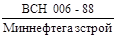
«Строительство магистральных и
промысловых трубопроводов.
Сварка»)
Электроды с основным покрытием для ремонта и подварки изнутри трубы, а также для сварки заполняющих и облицовочного слоя шва при любой прокладке
|
Тип электродов по ГОСТ 9467-75 |
Марка электродов |
Диаметр электродов, мм |
Диаметр свариваемых труб, мм |
Предел прочности труб (по ТУ), кгс/мм2 |
|
|
Для подварки изнутри трубы и ремонта корневого слоя шва |
Э42-Б |
УОНИ-13/45 |
3,0 |
1020 |
До 50 включительно |
|
Э46А-БХ |
- |
- |
- |
- |
|
|
Э50А-Б |
УОНИ-13/55, ЛБ-52А, Феникс-К50Р, |
3,0 |
1020 |
До 60 включительно |
|
|
Фокс-ЕВ50 |
4,0 |
||||
|
Для сварки и ремонта заполняющих слоев шва |
Э42А-Б |
УОНИ-13/45 |
3,0 |
Все диаметры |
До 50 включительно |
|
Э46А-БХ |
- |
- |
- |
- |
|
|
Э50А-Б |
УОНИ-13/55, Гарант, ЛБ-52А, Феникс-К50Р, Фокс-ЕВ50 |
Все диаметры |
До 55 включительно |
||
|
Э60-Б |
ВСФ-65У, Шварц 3К, ЛБ-62Д, Кессель, 5520 МО |
Все диаметры |
До 60 включительно |
||
|
Э70-БХХ |
ВСФ-75У |
Все диаметры |
До 60 - 65 включительно |
Х Марка электродов этого типа настоящими ВСН не регламентированы, поскольку они не проходили приемочных испытаний в установленном порядке.
ХХ Для сварки стыков термоупрочненных труб с sв = 60 кгс/мм2 и труб из сталей контролируемой прокладки с нормативным sв = 65 кгс/мм2
Справочное
(извлечение из
«Строительство магистральных и
промысловых трубопроводов.
Сварка»)
Электроды с покрытием рутилового типа (Р) для сварки трубопроводов 4-го и 5-го класса с нормативным значением временного сопротивления разрыву металла труб до 50 кгс/мм2
|
Электроды |
|||
|
Тип по ГОСТ 9467-75 |
Марка |
Диаметр, мм |
|
|
Сварка корневого слоя шва |
Э42 |
АНО-6, ОЗС-23 |
2,0 - 2,5 |
|
Сварка заполняющих и облицовочных слоев шва и ремонта шва |
Э46 |
ОЗС-6, МР-3, АНО-4, ОЗС-21 |
3,0 - 4,0 |
Примечание. Электроды непосредственно перед сваркой прокаливать при температуре 140 - 180 °С в течение 1 ч. Электроды с рутиловым покрытием типа Э42 и Э46 разрешается применять только при сварке трубопроводов для транспортировки пара, воды и других невзрывоопасных и нетоксичных продуктов.
Справочное
(извлечение из
«Строительство магистральных и
промысловых трубопроводов.
Сварка»)
Технологические зазоры при сборке стыков под ручную электродуговую сварку
|
Электроды с целлюлозным покрытием |
Электроды с основным и рутиловым покрытием |
|||
|
Диаметр электрода, мм |
3,0 |
4,0 |
2,0 - 2,5 |
3,0 - 3,25 |
|
Зазор, мм |
1,5 - 2,5 |
1,5 - 3,0 |
1,5 - 2,5 |
2,0 - 3,0 |
Рекомендуемое
Число труб и трубных секций диаметром 530 - 1420 мм, рекомендуемых к перевозке плетевозами
|
Диаметр труб, мм |
||||||||||||||||||
|
530×8 |
720×10 |
820×9 |
1020×13 |
1220×13 |
1420×17 |
|||||||||||||
|
Длина труб или трубных секций, м |
||||||||||||||||||
|
12 |
24 |
36 |
12 |
24 |
36 |
12 |
24 |
36 |
12 |
24 |
36 |
12 |
24 |
36 |
12 |
24 |
36 |
|
|
9 |
7 |
4 |
3 |
5 |
2 |
1 |
5 |
2 |
1 |
2 |
1 |
- |
2 |
1 |
1 |
1 |
- |
- |
|
19 |
12 |
7 |
7 |
6 |
3 |
2 |
6 |
3 |
2 |
3 |
1 |
1 |
3 |
1 |
1 |
2 |
1 |
- |
|
25 |
12 |
9 |
9 |
6 |
6 |
3 |
6 |
6 |
3 |
3 |
3 |
2 |
3 |
3 |
2 |
2 |
2 |
1 |
Рекомендуемое
|
Толщина стенки, мм |
Грузоподъемность 9 т |
Грузоподъемность 19 т |
Грузоподъемность 25 т |
|||||||
|
Длина труб (секций), м |
||||||||||
|
12 |
24 |
36 |
12 |
24 |
36 |
12 |
24 |
36 |
||
|
1 |
2 |
3 |
4 |
5 |
6 |
7 |
8 |
9 |
10 |
11 |
|
25 |
4,0 |
361 |
180 |
120 |
763 |
381 |
254 |
1005 |
502 |
335 |
|
28 |
4,0 |
315 |
157 |
105 |
666 |
333 |
222 |
877 |
438 |
292 |
|
35 |
4,0 |
270 |
135 |
90 |
571 |
285 |
190 |
752 |
376 |
250 |
|
38 |
4,0 |
223 |
111 |
74 |
471 |
235 |
157 |
620 |
310 |
206 |
|
42 |
4,0 |
199 |
99 |
66 |
421 |
210 |
140 |
555 |
277 |
185 |
|
50 |
8,0 |
90 |
45 |
30 |
190 |
95 |
63 |
250 |
125 |
83 |
|
57 |
8,0 |
73 |
36 |
24 |
154 |
79 |
51 |
202 |
101 |
67 |
|
68 |
8,0 |
63 |
31 |
21 |
133 |
66 |
44 |
175 |
87 |
58 |
|
16,0 |
36 |
18 |
12 |
76 |
38 |
25 |
100 |
50 |
33 |
|
|
114 |
8,0 |
35 |
17 |
11 |
74 |
37 |
24 |
97 |
48 |
32 |
|
28,0 |
17 |
8 |
5 |
36 |
18 |
12 |
47 |
23 |
15 |
|
|
159 |
7,0 |
27 |
14 |
9 |
57 |
28 |
19 |
75 |
37 |
25 |
|
10,0 |
19 |
9 |
6 |
40 |
20 |
13 |
52 |
26 |
17 |
|
|
28,0 |
7 |
3 |
2 |
15 |
7 |
5 |
20 |
10 |
6 |
|
|
168 |
7,0 |
27 |
14 |
9 |
57 |
28 |
19 |
75 |
37 |
25 |
|
9,0 |
20 |
10 |
6 |
42 |
21 |
14 |
55 |
27 |
18 |
|
|
14,0 |
12 |
6 |
4 |
25 |
12 |
8 |
33 |
16 |
11 |
|
|
36,0 |
6 |
3 |
2 |
14 |
7 |
5 |
18 |
9 |
6 |
|
|
219 |
7,0 |
20 |
10 |
7 |
42 |
21 |
14 |
55 |
27 |
18 |
|
10,0 |
14 |
7 |
4 |
29 |
14 |
9 |
38 |
19 |
13 |
|
|
16,0 |
8 |
4 |
2 |
16 |
8 |
5 |
22 |
11 |
7 |
|
|
36,0 |
6 |
3 |
2 |
13 |
6 |
4 |
17 |
8 |
5 |
|
|
273 |
7,0 |
16 |
8 |
5 |
33 |
16 |
11 |
44 |
22 |
14 |
|
10,0 |
10 |
5 |
3 |
22 |
11 |
7 |
27 |
13 |
9 |
|
|
20,0 |
5 |
2 |
1 |
11 |
5 |
4 |
13 |
6 |
4 |
|
|
36,0 |
3 |
1 |
1 |
5 |
2 |
1 |
7 |
3 |
2 |
|
|
325 |
8,0 |
11 |
5 |
3 |
24 |
12 |
8 |
32 |
16 |
10 |
|
10,0 |
9 |
4 |
3 |
19 |
9 |
6 |
25 |
12 |
8 |
|
|
14,0 |
6 |
3 |
2 |
13 |
6 |
4 |
17 |
8 |
5 |
|
|
36,0 |
3 |
1 |
1 |
5 |
2 |
1 |
7 |
3 |
2 |
|
|
426 |
8,0 |
8 |
4 |
2 |
18 |
9 |
6 |
24 |
12 |
8 |
|
16,0 |
3 |
1 |
1 |
7 |
3 |
2 |
10 |
5 |
3 |
|
|
18,0 |
3 |
1 |
1 |
7 |
3 |
2 |
10 |
5 |
3 |
|
|
36,0 |
1 |
- |
- |
3 |
1 |
1 |
5 |
2 |
1 |
|
Рекомендуемое
РАСЧЕТ
параметров схем производства изоляционно-укладочных работ при
строительстве промысловых трубопроводов
1. Определение оптимальных расстояний между точками подвеса трубопровода в изоляционно-укладочной колонне и длин крайних пролетов технологической схемы.
Исходные данные: технологические высоты подъема трубопровода h1 и h3, вес единицы длины трубопровода q, изгибная жесткость EJ.
Для расчетов используем известные формулы:
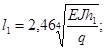
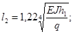
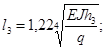
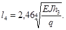
Высоты в точках 1 и 3 должны быть в пределах 0,5 - 1,0 м над поверхностью строительной полосы (см. рисунок).
Расчетно-технологическая схема
2. Определение нагрузок в точках подвеса.
Исходными данными являются значения q и величины пролетов l1, l2, l3 и l4, масса сушильной установки Qст, очистной машины Qоч, изоляционной машины Qиз.
Нагрузки на трубоукладчики (К1, К2 и К3), а также реакции грунта Ro и RA рассчитывали по формулам:
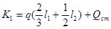
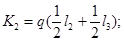
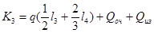
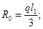
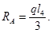
3. Проверка трубопровода по напряженному состоянию:
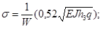
где E - модуль упругости для стали;
W - момент сопротивления поперечного сечения трубы.
Если напряжения s превышают предельно допустимые значения (0,8 sт), необходимо использовать другие технические решения:
а) раздельный способ производства изоляционно-укладочных работ (позволяет снизить монтажные напряжения на 15 - 25 % в результате снижения высоты подъема);
б) использование одного из трубоукладчиков колонны для поддержания трубопровода за изоляционной машиной (трубоукладчик должен быть оснащен подвеской с эластичными катками);
в) бесподъемные способы укладки трубопровода (сплав, протаскивание);
г) посекционная или потрубная сборка трубопровода в траншее.
4. Число трубоукладчиков в точках подвеса рассчитывают, исходя из нагрузок К1, К2 и К3 с учетом вылетов стрел у каждого трубоукладчика в колонне.
Число трубоукладчиков N в каждой точке подвеса определяют по формуле:
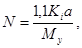
где Ki - нагрузка в точке подвеса;
a - вылет стрелы;
My - момент устойчивости трубоукладчика.
Рекомендуемое
ОБОСНОВАНИЕ
к выбору числа трубоукладчиков в колонне при укладке трубопроводов газлифтных
систем
При укладке в траншею трубопроводов для газлифтных систем из труб диаметром 114 - 219 мм, с толщиной стенки 20 мм необходимо учитывать следующие обстоятельства (см. рисунок).
1. Сваренная на строительной полосе нитка газлифтного трубопровода, обладая повышенной жесткостью EJ (по сравнению с трубами, у которых толщина стенки 8 - 10 мм), требует значительно больших усилий для изгиба в горизонтальной плоскости (Р1 и Р2). Однако увеличивать эти усилия сверх расчетных значений (Р1 = 600 кгс) недопустимо, так как при этом может произойти интенсивное боковое смещение трубопровода на строительной полосе с порчей изоляционного покрытия, поэтому при укладке трубопровода из толстостенных труб приходится увеличивать базовое расстояние L на изгибаемом (укладываемом) участке до значения, определяемого по формуле
где Е - модуль упругости трубной стали (Е = 2,1 × 106 кгс/см2);
D и d - соответственно диаметр и толщина стенки труб (D = 11,4 - 21,9 см; d = 2,0 см);
К - коэффициент, учитывающий граничные и начальные условия расчетно-технологической схемы (К = 3,3 - 3,5);
r - минимальный радиус упругого изгиба трубопровода (r = 1000 D).
Так, для трубопровода диаметром 219 мм при значении К = 3,4 L = 44,8 м. Этот же параметр L (расстояние между первым и последним трубоукладчиками) при укладке трубопровода из труб с толщиной стенки 8 мм составляет всего 17,8 м; здесь достаточно иметь в колонне два трубоукладчика.
Расчетно-технологическая схема к обоснованию выбора числа трубоукладчиков при укладке трубопроводов газлифтных систем (сплошными линиями обозначены контуры трубопровода с толщиной стенки 20 мм, штриховыми - с толщиной стенки 8 - 10 мм)
2. Кривая упругого изгиба, получаемая из условий силовых воздействий на трубопровод и характеризуемая параметром L, должна вписываться в заданные геометрические ограничения, т.е.
где a - расчетное смещение оси трубопровода до укладки по отношению к оси траншеи (а = 3 м).
В данном случае указанное условие выполняется:
L = 44,8 м £ 51,3 м,
При заданной высоте подъема трубопровода (в местах установки трубоукладчиков) над строительной полосой, которая определяется прочностью труб и находится в пределах h = 0,8 - 1,0 м, необходимо, чтобы не было контакта трубопровода с грунтом в средней части пролета L. Зазор D в этой части определяют из соотношения
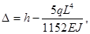
где q - вес 1 м трубопровода (при диаметре труб 219 мм q = 0,11 т/м);
EJ - жесткость трубопровода на изгиб, (при диаметре труб 219 мм EJ = 1730 т.м2).
Если принять h = 0,9 м и L = 44,8 м, то D = -0,21 м. Знак минус указывает на отсутствие зазора между трубопроводами поверхностью строительной полосы в средней части пролета.
Для обеспечения гарантированного зазора D потребовалось бы дополнительно увеличить высоту подъема трубопровода в местах установки трубоукладчиков до значений 1,2 - 1,3 м, что могло бы привести к поломке трубопровода.
Таким образом, для обеспечения нормальной работы колонны по укладке газлифтного трубопровода необходимо дополнительно поддерживать его в средней части пролета L. Для этого здесь должен быть установлен вспомогательный трубоукладчик средней грузоподъемности.
Следовательно, для укладки газлифтных трубопроводов диаметром 114 - 219 мм, с толщиной стенки 20 мм в колонне необходимо иметь по меньшей мере три трубоукладчика.
Рекомендуемое
РАССТОЯНИЯ
между кранами-трубоукладчиками при различных способах
изоляционно-укладочных работ
|
Раздельный способ изоляции |
Укладка непрерывным способом |
Укладка цикличным методом |
Изоляция и укладка совмещенным способом |
|||||
|
Колич. трубоукладчиков |
Расстояние, м |
Колич. трубоукладчиков |
Расстояние, м |
Колич. Трубоукладчиков |
Расстояние, м |
Колич. трубоукладчиков |
Расстояние, м |
|
|
57 - 114 |
2 |
8 - 12 |
2 |
10 - 12 |
3 |
12 - 15 |
2 |
10 - 12 |
|
168 - 219 |
2 |
10 - 15 |
2 |
12 - 15 |
3 |
12 - 17 |
2 |
12 - 15 |
|
273 - 426 |
2 |
12 - 17 |
2 |
15 - 20 |
3 |
15 - 20 |
2 |
15 - 20 |
|
530 |
2 |
12 - 20 |
2 |
17 - 22 |
3 |
17 - 25 |
3 |
15 - 20 |
Рекомендуемое
Значения коэффициентов трения скольжений, рекомендуемые при расчетах тяговых усилий
|
Коэффициент трения скольжения |
|
|
Скальные грунты |
0,8 |
|
Пески крупные и гравелистые |
0,65 |
|
Пески среднезернистые |
0,6 |
|
Мелкие пески к супеси |
0,55 |
|
Супеси |
0,45 |
|
Суглинки |
0,4 |
|
Глины |
0,35 |
Значения коэффициентов трогания с места трубной плети
|
Коэффициент трогания |
|
|
Протаскивание с помощью роликовых береговых дорожек |
1,5 |
|
Протаскивание по берегу по любому грунту |
2,0 |
|
Протаскивание по берегу с остановкой менее суток при образовании тонкой ледяной корки на поверхности грунта вдоль плети |
4,0 |
|
Протаскивание под водой: |
|
|
с остановкой менее суток |
2,0 |
|
с остановкой более суток по галечнику, гравию и скале под водой |
2,0 |
|
с остановкой более суток при наличии под водой песчаных, суглинистых и глинистых грунтов и ила |
2,5 |
Рекомендуемое
МЕТОДИКА
расчета теплотехнических параметров испытания теплоизолированных трубопроводов
подогретой водой
Настоящая методика предназначена для выполнения теплотехнических расчетов параметров испытания стальных надземных теплоизолированных трубопроводов.
Методика позволяет определять требуемую температуру воды в трубопроводе для начала испытания, параметры наполнения трубопровода водой, количество воды для его отогрева, а также оценивать интенсивность льдообразования в трубопроводе после испытания.
Методика может быть также использована для оценки теплотехнических параметров испытания надземных нетеплоизолированных участков трубопроводов.
Основные обозначения:
Cв - удельная теплоемкость воды, Дж/кг · К;
Cт - удельная теплоемкость материала стенки трубы, Дж/кг · К;
D - наружный диаметр трубы, м;
L - длина трубопровода, км;
Q. - количество воды, необходимое для отогрева трубопровода, м3;
q - расход воды при заполнении трубопровода, м3/ч;
R - термическое сопротивление, м2×К/Вт;
tв - температура воздуха, °С;
tн - температура воды в трубопроводе в начале испытания (минимальная), °С;
t0 - температура воды на входе в трубопровод, °С;
W - скорость ветра, м/с;
d - толщина стенки трубы, м;
dиз - толщина теплоизоляционного покрытия, м;
d* - скорость роста наледи, мм/ч;
lиз - коэффициент теплопроводности материала теплоизоляции Вт/м · К;
rв - плотность воды, кг/м3;
rт - плотность материала стенки трубы, кг/м3.
1. Определение начальной температуры воды в трубопроводе.
Температуру воды в трубопроводе выбирают таким образом, чтобы исключить образование наледи в нем в точение всего времени испытания. Искомую температуру рассчитывают по формуле
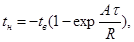
где
В таблице приведены значения коэффициента А для трубопроводов из труб диаметром 550 - 1420 мм.
Для графического определения начальной температуры воды в трубопроводе можно использовать номограмму, приведенную на рис. 1.
|
D, м |
d, м |
A |
B |
C |
|
0,53 |
0,008 |
0,00652 |
1,39 |
11,4 |
|
0,009 |
0,00652 |
1,38 |
12,9 |
|
|
0,53 |
0,013 |
0,00655 |
1,36 |
18,4 |
|
0,0084 |
0,00479 |
1,90 |
16,4 |
|
|
0,72 |
0,009 |
0,00479 |
1,89 |
17,5 |
|
0,82 |
0,009 |
0,00420 |
2,16 |
20,0 |
|
0,012 |
0,00338 |
2,68 |
33,2 |
|
|
1,02 |
0,017 |
0,00339 |
2,65 |
46,7 |
|
0,0152 |
0,00283 |
3,21 |
50,2 |
|
|
1,22 |
0,016 |
0,00283 |
3,20 |
52,8 |
|
0,0168 |
0,00283 |
3,19 |
55,1 |
|
|
1,42 |
0,0157 |
0,00273 |
3,74 |
60,4 |
|
0,0175 |
0,00243 |
3,73 |
67,3 |
Рис. 1. Номограмма для определения начальной температуры воды в трубопроводе
2. Определение параметров наполнения трубопровода.
Параметры наполнения трубопровода назначаются таким образом, чтобы при заданной суммарной производительности наполнительных агрегатов температура воды, подаваемой в трубопровод, обеспечивала требуемое значение температуры в конце участка.
Для принятой суммарной производительности наполнительных агрегатов температуру воды, подаваемую в трубопровод, рассчитывают по формуле

где
В таблице приведены значения коэффициента В для трубопроводов из труб диаметром 530 - 1420 мм. Для графического определения температуры воды, подаваемой в трубопровод, может быть использована номограмма, приведенная на рис. 1.
3. Оценка количества воды, необходимого для отогрева трубопровода.
Если трубопровод, подлежащий испытанию, имеет температуру стенки ниже 0 °С, для удаления образующейся в процессе его заполнения наледи необходима прокачка воды через испытываемый участок.
Количество воды, которое должно быть слито из трубопровода, в процессе прокачки может быть оценено по формуле
где
В таблице приведены значения коэффициента С для трубопроводов из труб диаметром 530 - 1420 мм.
4. Оценка интенсивности льдообразования в трубопроводе.
При возникновении задержек в проведении работ по испытанию, приводящих к увеличению продолжительности пребывания воды в трубопроводе по сравнению с принятой в расчете, на внутренней поверхности трубы образуется наледь. Скорость роста толщины наледи рассчитывают по формуле
где
Величину d* можно определить по номограмме, приведенной на рис. 2.
5. Надземные нетеплоизолированные трубопроводы.
Приведенная в разд. 1 - 4 методика может быть использована для оценочных теплотехнических расчетов надземных нетеплоизолированных трубопроводов. В этом случае величину R в разд. 1 - 4 следует определять по формуле
.
Величину R можно найти по номограмме, приведенной на рис. 3.
6. Примеры теплотехнических расчетов гидроиспытания.
Пример 1. Определить теплотехнические параметры гидроиспытания участка надземного теплоизолированного трубопровода при следующих исходных данных: t = 40 ч; L = 8 км; D = 0,53 м; d = 0,009 м; dиз = 0,04 м; lиз = 0,1 Вт/м × К; tв = -25 °С; q = 100 м3/ч.
Для заданного размера трубы по таблице определяем значение коэффициентов А, В, С: А = 0,00652; В = 1,38; С = 12,9.
Рассчитываем значение термического сопротивления теплоизоляции:
Определяем значение комплекса:
Из точки 0,652 оси абсцисс номограммы, приведенной на рис. 1, проводим линию, параллельную оси ординат, до пересечения с прямой tв = -25 °С. Опустив из точки пересечения перпендикуляр на оси ординат, определяем величину превышения начальной температуры воды над температурой воздуха:
Рис. 2. Номограмма для определения скорости роста наледи в трубопроводе в зависимости от температуры наружного воздуха и термического сопротивления теплоизоляции
Рис. 3. Номограмма для определения термического сопротивления теплоизолированного трубопровода в зависимости от скорости ветра и диаметра трубопровода:
1 - диаметр 1420 мм; 2 - диаметр 530 мм
Находим начальную температуру воды в трубопроводе:
tн = 49 + tв = 49 - 25 = 24°С.
Рассчитываем значение комплекса:
Из точки tн - tв = 49 оси ординат проводим прямую, параллельную прямым tв = const и определяем точку ее пересечения с перпендикуляром к оси абсцисс в точке 0,276. Из найденной таким образом точки пересечения опускаем перпендикуляр на ось ординат и определяем величину превышения температуры воды на входе в трубопровод над температурой воздуха:
.
Определяем температуру воды на входе в трубопровод:
to = 65 + tв = 65 - 25 = 40°С.
Порядок пользования номограммой решения данного примера отображен на рис. 1 штриховой линией.
Рассчитываем количество воды, необходимое для отогрева трубопровода:
Определяем скорость роста наледи в трубопроводе по номограмме рис.2. Из точки абсцисс tв = -25 °С проводим линию, параллельную оси ординат до пересечения с прямой R = 0,4. Опустив из точки пересечения перпендикуляр на ось ординат, определяем значение 0 =0,72 мм/ч.
Таким образом, для проведения гидравлического испытания заданного участка трубопровода необходимо:
иметь температуру воды в конце трубопровода на начало испытания не ниже 24 °С, что обеспечивает проведение испытания за 40 ч без замерзания воды. Для этого температура воды, подаваемой в трубопровод, должна быть не ниже 40 °С (при подаче 100 м3/ч);
прокачать через трубопровод около 210 м3 воды путем слива ее с противоположного конца испытываемого участка. Прокачку необходимо контролировать измерением температуры сливаемой воды. При достижения расчетного значения tн = 24 °С прокачку прекращают.
В случае превышения заданного времени пребывания воды в трубопроводе на его внутренней поверхности образуется наледь. Скорость роста наледи составит 0,72 мм/ч.
Пример 2. Определить теплотехнические параметры гидроиспытания надземного нетеплоизолированного трубопровода при следующих исходных данных: t = 25 ч; L = 8 км; D = 1,42 м; d = 0,0175 м; tв = -5 °С; W = 5 м/с; q = 1000 м3/ч.
Для заданного размера трубы по таблице определяем значение коэффициентов А, В, С: А = 0,00243; B = 3,73; С = 67,3. По номограмме, приведенной на рис. 3, определяем величину термического сопротивления. Для этого из точки W = 5 м/с оси абсцисс проводим линию, параллельную оси ординат, до пересечения с прямой D = 1,4 м, опуская перпендикуляр на точки пересечения на ось ординат, определяем значение R = 0,058 м2 × К/Вт.
Рассчитываем значение комплекса:
Из точки 1,05 оси абсцисс номограммы, приведенной на рис. 1, проводим линию, параллельную оси ординат, до пересечения с прямой tв = -5 °С. Опустив из точки пересечения перпендикуляр на ось ординат, определяем величину превышения начальной температуры воды над температурой воздуха:
tн - tв = 14,5°С.
Определяем начальную температуру воды в трубопроводе:
tн = 14.5 - 5 = 9,5°С.
Рассчитываем значение комплекса:
Из точки tн - tв = 14,5 °С оси ординат проводим прямую, параллельную прямым tв = const и определяем точку ее пересечения с перпендикуляром к оси абсцисс в точке 0,52.
Из найденной таким образом точки пересечения опускаем перпендикуляр на ось ординат и определяем величину превышения температуры воды на входе в трубопровод над температурой воздуха:
tо - tв = 24°С
Определяем температуру воды на входе в трубопровод:
tо = 24 + tв = 19°С
Порядок пользования номограммой при решении данного примера показан на рис. 1 штриховой линией.
Рассчитываем количество воды, которое необходимо для отогрева трубопровода:
Определяем возможную скорость роста наледи в трубопроводе по номограмме (см. рис. 5). Из точки абсцисс tв = -5 °С проводим прямую), параллельную оси ординат, до пересечения с прямой R = 0,058. Опустив из точки пересечения перпендикуляр на оси ординат, определяем значение d* = 1 мм/ч.
Рекомендуемое
МЕТОДИКА РАСЧЕТА
теплотехнических параметров испытания подземного трубопровода без теплоизоляции
Методика предназначена для проведения теплотехнических расчетов трубопроводов, уложенных в мерзлый грунт. Нижеизложенные материалы позволяют в зависимости от диаметра трубопровода и протяженности испытываемого участка установить возможность проведения гидроиспытания и выбрать параметры наполнения трубопровода.
Подлежат определению в зависимости от природно-климатических факторов следующие параметры:
суммарная производительность наполнительных агрегатов;
время прокачки воды через испытываемый участок;
температура воды на входе в испытываемый участок - в случае испытания трубопровода подогретой водой.
Определение параметров наполнения трубопровода основано на использовании данных по эталонному трубопроводу, полученных путем численного моделирования на ЭВМ процесса теплового взаимодействия трубопровода с грунтом в условиях испытания.
Параметры эталонного трубопровода:
протяженность испытываемого участка L* = 4 км;
грунт - суглинок водонасыщенный;
температура грунта T*гр = минус 10 °С;
температура воды на входе в испытываемый участок T*в = 5 °С (или 50 °С);
продолжительность испытания t*и = 40 ч.
На рис. 1 и 2 представлены зависимости времени прокачки для эталонного трубопровода в функции от его диаметра для различных значений суммарной производительности наполнительных агрегатов.
Зависимости, показанные на рис. 1, рассчитаны для температуры воды, подаваемой в трубопровод T*в = 5 °С, и рекомендуются для определения параметров наполнения протяженных участков трубопроводов большого диаметра.
Рис. 1. Зависимость времени прокачки воды с температурой T*в = 5 °С для эталонного трубопровода от его диаметра при суммарной производительности наполнительных агрегатов Q , м3/ч:
1 - Q = 500; 2 - 1000; 3 - 1500; 4 - 2000
Рис. 2. Зависимость времени прокачки воды с температурой T*в = 50 °С для эталонного трубопровода от его диаметра при суммарной производительности наполнительных агрегатов Q , м3/ч:
1 - Q = 50; 2 - 100; 3 - 200; 4 - 300
Зависимости, показанные на рис. 2, рассчитанные для Т*в = 50 °С, рекомендуются в основном для трубопроводов малого диаметра (200 - 500 мм) и относительно небольшой протяженности (до 10 км), когда имеется возможность обеспечения значительного подогрева прокачиваемой через испытываемый участок воды.
Для определения параметров наполнения испытываемого участка необходимо:
для данного диаметра трубопровода, исходя из имеющихся ресурсов воды, возможности ее подогрева по графикам, показанным на рис. 1 и 2, выбрать суммарную производительность наполнительных агрегатов и соответствующее ей время прокачки t*пр, необходимое для испытания эталонного трубопровода;
уточнить время прокачки применительно к конкретным параметрам испытываемого участка по формуле
при использовании графических зависимостей, представленных на рис. 1:
при использовании зависимостей (см. рис. 2)
где L - длина испытываемого участка;
Tгр - температура грунта;
Tв - температура воды;
K - коэффициент, учитывающий свойства грунта, безразмерный.
Для водонасыщенных глинистых грунтов и торфа K = 1, для песчаных грунтов К = 2. Для осушенных грунтов величина K может быть снижена на 50 %.
При продолжительности испытания более 40 ч время прокачки должно увеличиваться пропорционально предполагаемой продолжительности испытания.
Для расчетной продолжительности прокачки более 50 ч необходимо оценивать возможную величину относительного обледенения выходного участка трубопровода Sл по формуле
где tпр - время прокачки воды, ч;
D - диаметр трубопровода, м.
При величине S > 0,2 необходимо пересмотреть принятые в расчете параметры наполнения трубопровода, увеличив суммарную производительность наполнительных агрегатов и, если возможно, температуру подаваемой в трубопровод воды. В противном случае необходимо сократить длину испытываемого участка или перенести испытания на более теплый период года.
Пример 1. Определить параметры наполнения трубопровода для проведения гидроиспытания продолжительностью 60 ч.
Исходные параметры:
L = 20 км - протяженность испытываемого участка;
D = 1420 мм - диаметр трубопровода;
грунт - суглинок водонасыщенный;
Тгр = минус 6 °С - температура грунта;
Тв = 4 °С - температура воды.
Подогрев воды перед подачей в трубопровод не предусмотрен.
Решение.
Задаемся суммарной производительностью наполнительных агрегатов Q = 1000 м3/ч. По графикам рис. 1 для диаметра трубопровода 1420 мм определяем продолжительность прокачки эталонного трубопровода:
t*пр = 11 ч.
По формуле
определяем требуемое время прокачки воды через испытываемый участок для гидроиспытания продолжительностью 40 ч (К = 1):
Уточним время прокачки применительно к продолжительности испытания: tи = 60 ч.
Оцениваем величину относительного обледенения выходного участка трубопровода:
Поскольку Sл < 0,2, принимаем определенный выше параметр наполнения Q = 1000 м3/ч. tпр = 107 ч, как рекомендуемое для испытания данного участка трубопровода.
Пример 2. Определить параметры наполнения трубопровода для проведения гидроиспытания продолжительностью tи = 40 ч.
Исходные параметры:
L = 6 км - протяженность испытываемого участка;
D = 0,30 м - диаметр трубопровода;
грунт - песок водонасыщенный;
Tгр = минуc I5°C - температура грунта.
Температура трубопровода не должна превышать 40 °С (Tдоп).
Решение.
Задаемся значением температуры воды на входе в трубопровод Tв = Tдоп = 40°С и производительностью наполнительных агрегатов Q = 150 м3/ч.
По графикам рис. 2 для эталонного трубопровода диаметром 0,5 м определяем требуемую для его испытания продолжительность прокачки: Тпр = 5 ч.
По формуле
определяем время прокачки испытываемого трубопровода (К=2):
СОДЕРЖАНИЕ